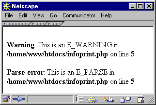

A very nice resource http://devzone.zend.com/public/view/tag/Extension
Zend API: PHP のコアをハックする
導入
Those who know don't talk. (知ってる人は教えようとしない)
Those who talk don't know. (教えてる人はあまり知らない)
時には、「あるがままの」PHP では要件を満たさないことがあります。平均的な ユーザーがこのような事態に陥ることはまずありませんが、プロがアプリケーションを 作成していると、速度面や機能面ですぐに PHP の限界に達してしまいます。 言語の制限により、新機能が常にネイティブ実装されるとは限りません。 そんな場合には、たった 1 行のコードのために大げさなライブラリを利用 しなければならず非常に不便です。このような PHP の欠点に打ち勝つための なんらかの手段が必要です。
もしこの域に達したなら、PHP の心臓部に手を触れ、その中身（PHP を動かして いる C のコード）を探ってみるとよいでしょう。
警告
この情報は、現在はかなり時代遅れになっています。 PHP 4 の初期バージョンで使用されていた、 初期の ZendEngine 1.0 の API しか網羅していない部分もあります。
より新しい情報は、PHP のソースに含まれる各種 README ファイル、 あるいは Zend の Web サイトにある » Internals を参照ください。
概要
「PHP を拡張する」と言うのは簡単ですが、実際に行うのは大変なことです。 PHP は数メガバイトのソースコードからなる成熟したツールに発展して きており、このようなシステムをハックするには、学ばねばならないことが あります。この章を構成するにあたり、我々は「実際に作業することによって 学んでもらう」という手法をとることにしました。これは科学的とは言えないし プロフェッショナルな方法でもありません。しかし、楽しく学ぶことが できて最終的によい結果に終わると考えたのです。 以下の節では、最も基本的な拡張モジュールをお手軽に作成する方法を 学びます。その後で、Zend API の高度な機能について学びます。 もうひとつの方法としては、機能・デザイン・ヒント・裏技などを 一気に学ぶ、つまり実践的な手法の前にまず大きな絵の全体を見せてしまう というものがあります。何の小細工もせずにすむという点で、こちらの 方法のほうが「よりよい」ものではあるのですが、この方法は 非常にフラストレーションがたまり、時間と気力をかなり消費するもの でもあります。そのため、我々は前者の方法をとることにしたのです。
この章では PHP の内部動作についてできる限りの知識を伝えるように 心がけています。しかしながら、いつどんなときでも 100% 動作する 完璧な PHP 拡張モジュール作成ガイドを提供するのは不可能であることを 知っておいてください。PHP は巨大で複雑なパッケージであるので、 実際に手を動かしながら勉強していかないと内部構造は理解できないでしょう。 そのため、実際のソースとともに作業を進めていくことを推奨します。
Zend とは何 ? そして PHP とは何 ?
Zend という名前は PHP のコアとなる言語エンジンを 指します。PHP は、外部から見た際のシステム全体を 指す単語です。最初はすこし紛らわしく感じるかもしれませんが、これは そんなに複雑な話ではありません (以下を参照ください)。 Web スクリプトのインタプリタを実装するには、3 つのパートが必要です。
-
インタプリタ (interpreter) は 入力コードを解析し、変換し、そして実行します。
-
機能 (functionality) は、言語の機能 (関数など) を実装します。
-
インターフェイス (interface) は、 Web サーバーなどと会話をします。

これ以降のセクションでは、PHP を拡張するにはどこをどのように変更すれば よいのかを説明します。
拡張の可能性
先ほど 示したとおり、PHP を拡張するには 3 つの方法があります。それは 外部モジュール・組み込みモジュール・Zend エンジン の 3 つです。以下の節で、これらそれぞれについて考えます。
外部モジュール
外部モジュールは、スクリプトの実行時に dl() 関数を使用して読み込みます。この関数は、ディスクから共有オブジェクトを 読み込んで、呼び出し元のスクリプトからその機能を使用できるように します。スクリプトが終了すると、外部モジュールはメモリから削除 されます。この方法には利点も欠点もあります。それを以下の表にまとめます。
| 利点 | 欠点 | |
| PHP をコンパイルせずに外部モジュールを使用できる。 | スクリプトが実行されるたび (アクセスされるたび) に 共有オブジェクトを読み込む必要があり、速度が非常に遅くなる。 | |
| その機能を「外部にまかせる」ことにより、PHP のサイズを 小さく抑えられる。 | 外部の追加ファイルによってディスクを散らかしてしまう。 | |
| そのモジュールの機能を使用するすべてのスクリプトが dl() をコールするか、あるいは php.ini の中の extension タグを変更する (この方法が適切でない場合もある) 必要がある。 |
サードパーティは、php.ini の extension タグを使用して PHP に拡張モジュールを 追加することを考えるかもしれません。これらの拡張モジュールは 本体のパッケージとは完全に切り離されます (これは、商用の環境では とても便利な機能です)。商用製品を配布する場合は、単に追加モジュール のみを含むディスクやアーカイブを出荷すればよいのであり、他の 拡張モジュールが使用できなくなるような PHP バイナリを作成する 必要がなくなります。
組み込みモジュール
組み込みモジュールは、PHP のコンパイル時に直接組み込まれ、PHP プロセスと一緒に動作します。すべてのスクリプトで、その機能が 使用可能となります。外部モジュールの場合と同様、組み込みモジュールに ついても利点と欠点があります。それを以下の表にまとめます。
| 利点 | 欠点 |
| いちいちモジュールを読み込む必要がない。 なにもしなくてのその機能が使用できる。 | 組み込みモジュールを更新するには PHP を再コンパイル する必要がある。 |
| 別の外部ファイルでディスクを散らかすことはない。 すべては PHP のバイナリに組み込まれる。 | PHP バイナリのサイズが大きくなり、メモリ消費量も増える。 |
Zend エンジン
もちろん、拡張機能を Zend エンジンに直接組み込むこともできます。 言語そのものの振る舞いを変更したい場合、あるいは言語のコアに 特別な関数を直接組み込む必要がある場合などには、この方式がよいでしょう。 しかし、一般的には Zend エンジンを変更することは避けるべきです。 ここを変更してしまうとその他の部分で非互換性が発生する可能性があり、 特別に変更された Zend エンジンに対応できる人は誰もいなくなるでしょう。 変更内容を PHP のソースから切り離すことができなくなりますし、 また「公式」なソースリポジトリからアップデートを行うと、変更内容が 上書きされてしまいます。そのため、この手法はよくないものと 考えられています。使用することはめったにないため、この文書では この手法については取り上げません。
ソース配置
注意:
この章の残りの部分に進む前に、お好みの Web サーバーの (変更されていない) ソースを取得しておきましょう。ここでは、Apache (» http://httpd.apache.org/ で取得できます) を使用します。また、もちろん PHP のソース (» http://www.php.net/ にあります - 言うまでもないですよね?) も必要です。
PHP の動作環境を自分でコンパイルして作成できるようにしておいて ください! この方法についてはここでは触れませんが、この章の内容を 学習しようとするのなら、最低限知っておくべき基本的な内容です。
コードの内容について説明する前に、PHP のファイルを探索する助けになるよう ソースツリーの内容に慣れておくべきです。これは、拡張モジュールを 開発したりデバッグしたりする際の必須技能です。
以下の表では、主なディレクトリの内容について説明しています。
| ディレクトリ | 内容 |
| php-src | PHP 本体のソースファイルおよびヘッダファイル。 PHP の API 定義やマクロなどはここにあります (重要)。 それ以外のものは、このディレクトリの下位階層にあります。 |
| php-src/ext | 動的モジュール、組み込みモジュールのソース置き場。 デフォルトでは、PHP 本体のソースツリーに統合された「公式」 モジュールが配置されています。PHP 4.0 以降、これらの標準 拡張モジュールを (そのモジュールがサポートしていれば) 動的モジュールとしてコンパイルすることが可能となりました。 |
| php-src/main | このディレクトリには PHP 本体のマクロや定義があります (重要)。 |
| php-src/pear | PHP Extension and Application Repository (PEAR) のディレクトリです。 ここには PEAR のコアファイルが含まれます。 |
| php-src/sapi | さまざまなサーバー用の抽象化レイヤのコードを含みます。 |
| TSRM | Zend および PHP の "Thread Safe Resource Manager" (TSRM) の場所です。 |
| ZendEngine2 | Zend エンジンのファイルがあります。この中で、Zend の API 定義やマクロなどのすべてが見つけられるでしょう (重要)。 |
PHP パッケージに含まれるすべてのファイルについて取り上げることは この章の範囲を超えています。しかし、以下のファイルについては 詳しく見ておくべきでしょう。
-
PHP の main ディレクトリにある php-src/main/php.h。 このファイルには PHP のマクロおよび API 定義の大半が含まれています。
-
Zend ディレクトリにある php-src/Zend/zend.h。 このファイルには Zend のマクロおよび定義の大半が含まれています。
-
これもまた Zend ディレクトリにある php-src/Zend/zend_API.h。 ここでは Zend の API を定義しています。
拡張規約
Zend は、ある規約に基づいて構築されています。 この標準規約を破ることを避けるため、 以下の節で説明する規則を守らなければなりません。
マクロ
重要なタスクのほぼ全てについて、Zend では便利なマクロを定義しています。 以下の表および図で、基本的な関数・構造体およびマクロについて 説明しています。マクロ定義のほとんどは zend.h あるいは zend_API.h にあります。この章を勉強したあとで、 これらのファイルをじっくり読んでみることをお勧めします (もちろん今この場で読んでもよいのですが、 まだこの段階ではすべてを理解することはできないでしょう)。
メモリ管理
特にサーバーソフトウェアにとって、リソース管理は重大な問題です。 メモリは最も貴重なリソースのひとつなので、 メモリ管理には最大限の注意を払わねばなりません。 メモリ管理の一部は Zend によって抽象化されており、 この抽象化を使用すべきなのは明白です。この抽象化を使用することにより、 Zend はすべてのメモリ割り当てを完全に制御できるようになります。 そのブロックが使用中なのかどうかを Zend が判断し、 未使用のブロックや参照されていないブロックを自動的に開放することで メモリリークを防ぐことができます。 このために使用する関数を、以下の表にまとめます。
| 関数 | 説明 |
| emalloc() | malloc() の代わりに使用します。 |
| efree() | free() の代わりに使用します。 |
| estrdup() | strdup() の代わりに使用します。 |
| estrndup() | strndup() の代わりに使用します。 estrdup() より高速で、バイナリセーフです。 複製する文字列の長さが事前にわかっている場合には、 この関数を使用することを推奨します。 |
| ecalloc() | calloc() の代わりに使用します。 |
| erealloc() | realloc() の代わりに使用します。 |
警告
Zend は、マルチスレッド Web サーバーをサポートするための
スレッドセーフなりソース管理機能も提供しています。
この機能を使用する場合は、複数スレッドを同時に実行できるようにするため、
すべてのグローバル変数をローカルの構造体に割り当てなければなりません。
この文書が書かれた時点では Zend のスレッドセーフモードはまだ完成していません。
そのため、この文書ではこれ以上この機能について取り上げません。
スクリプトの終了後も残り続けるメモリを確保するために、 malloc() および free() を使用することも可能です。しかし、これらの関数を使用するのは Zend API がどうしてもそれを要求している場合に限定し、 最大限の注意を払うようにしてください。それ以外の場合に使用すると、 メモリリークが発生する恐れがあります。
ディレクトリ関数およびファイル関数
Zend モジュール内では、以下のディレクトリ関数およびファイル関数を使用しなければなりません。 これらの関数の機能はそれぞれ対応する C 関数と同じですが、 さらにスレッドレベルでの仮想実行ディレクトリがサポートされています。
| Zend 関数 | 標準 C 関数 |
| V_GETCWD() | getcwd() |
| V_FOPEN() | fopen() |
| V_OPEN() | open() |
| V_CHDIR() | chdir() |
| V_GETWD() | getwd() |
| V_CHDIR_FILE() | ファイルのパスを引数として受け取り、 現在の実行ディレクトリをそのファイルのディレクトリに移動します。 |
| V_STAT() | stat() |
| V_LSTAT() | lstat() |
文字列の処理
Zend エンジンでは、文字列はその他の値 (整数値、論理値など) と少し異なる方法で処理されます。 これらの値を保存するために、追加のメモリを確保する必要はありません。 関数から文字列を返したい場合は、新しい文字列変数を シンボルテーブルかそれに類似のものに登録します。 その文字列が使用するメモリは、先ほど説明した e*() 関数で事前に確保しておかなければなりません (この段階では、まだあまりピンとこないかもしれません。 とりあえずは頭の片隅に置いておいてください。あとでもう一度説明します)。
複雑な型
配列やオブジェクトのような複雑な型については、扱いかたが異なります。 Zend はこれらの型を扱うための API を提供しており、 これらの型はハッシュテーブルとして保存されます。
注意:
これ以降のサンプルソースでは、 読みやすさを考慮して integer などの単純な型のみを使用します。 より高度な型を作成する方法については、この章の後半で説明します。
PHP の自動ビルドシステム
PHP 4 には、非常に柔軟な自動ビルドシステムがあります。 すべてのモジュールは、ext ディレクトリ以下に配置されています。各モジュールは、 モジュール自身のソースに加えて config.m4 というファイルを持っています。 これは拡張モジュールの設定用のファイルです (» http://www.gnu.org/software/m4/ を参照ください)。
これらの全てのファイルの雛形および .cvsignore は、ext ディレクトリ内にある ext_skel というシェルスクリプトで作成できます。 作成したいモジュールの名前を、スクリプトの引数として渡します。 このスクリプトは引数と同じ名前のディレクトリを作成し、 適切な雛形ファイルを作成します。
順を追って見ていくと、この手順は次のようになります。
:~/cvs/php4/ext:> ./ext_skel --extname=my_module Creating directory my_module Creating basic files: config.m4 .cvsignore my_module.c php_my_module.h CREDITS EXPERIMENTAL tests/001.phpt my_module.php [done]. To use your new extension, you will have to execute the following steps: 1. $ cd .. 2. $ vi ext/my_module/config.m4 3. $ ./buildconf 4. $ ./configure --[with|enable]-my_module 5. $ make 6. $ ./php -f ext/my_module/my_module.php 7. $ vi ext/my_module/my_module.c 8. $ make Repeat steps 3-6 until you are satisfied with ext/my_module/config.m4 and step 6 confirms that your module is compiled into PHP. Then, start writing code and repeat the last two steps as often as necessary.
デフォルトの config.m4 に示すデフォルトの config.m4 は、すこし複雑です。
例1 デフォルトの config.m4
dnl $Id: build.xml 324071 2012-03-10 01:29:04Z takagi $ dnl config.m4 for extension my_module dnl Comments in this file start with the string 'dnl'. dnl Remove where necessary. This file will not work dnl without editing. dnl If your extension references something external, use with: dnl PHP_ARG_WITH(my_module, for my_module support, dnl Make sure that the comment is aligned: dnl [ --with-my_module Include my_module support]) dnl Otherwise use enable: dnl PHP_ARG_ENABLE(my_module, whether to enable my_module support, dnl Make sure that the comment is aligned: dnl [ --enable-my_module Enable my_module support]) if test "$PHP_MY_MODULE" != "no"; then dnl Write more examples of tests here... dnl # --with-my_module -> check with-path dnl SEARCH_PATH="/usr/local /usr" # you might want to change this dnl SEARCH_FOR="/include/my_module.h" # you most likely want to change this dnl if test -r $PHP_MY_MODULE/; then # path given as parameter dnl MY_MODULE_DIR=$PHP_MY_MODULE dnl else # search default path list dnl AC_MSG_CHECKING([for my_module files in default path]) dnl for i in $SEARCH_PATH ; do dnl if test -r $i/$SEARCH_FOR; then dnl MY_MODULE_DIR=$i dnl AC_MSG_RESULT(found in $i) dnl fi dnl done dnl fi dnl dnl if test -z "$MY_MODULE_DIR"; then dnl AC_MSG_RESULT([not found]) dnl AC_MSG_ERROR([Please reinstall the my_module distribution]) dnl fi dnl # --with-my_module -> add include path dnl PHP_ADD_INCLUDE($MY_MODULE_DIR/include) dnl # --with-my_module -> chech for lib and symbol presence dnl LIBNAME=my_module # you may want to change this dnl LIBSYMBOL=my_module # you most likely want to change this dnl PHP_CHECK_LIBRARY($LIBNAME,$LIBSYMBOL, dnl [ dnl PHP_ADD_LIBRARY_WITH_PATH($LIBNAME, $MY_MODULE_DIR/lib, MY_MODULE_SHARED_LIBADD) dnl AC_DEFINE(HAVE_MY_MODULELIB,1,[ ]) dnl ],[ dnl AC_MSG_ERROR([wrong my_module lib version or lib not found]) dnl ],[ dnl -L$MY_MODULE_DIR/lib -lm -ldl dnl ]) dnl dnl PHP_SUBST(MY_MODULE_SHARED_LIBADD) PHP_NEW_EXTENSION(my_module, my_module.c, $ext_shared) fi
もし M4 ファイルにあまりなじみがないのなら (この機会に覚えてしまいましょう)、最初はこの例が難しく感じられるかもしれません。 しかし、実際はこれはとても簡単なものです。
注意: dnl で始まる行はすべてコメントであり、パースされません。
config.m4 ファイルの役割は、 configure に渡されたコマンドラインオプションを パースすることです。つまり、 必要な外部ファイルを読み込んで同じような設定タスクを行わなければならないということです。
デフォルトのファイルは、 configure スクリプトのオプションとして 2 つの設定ディレクティブ --with-my_module および --enable-my_module を作成します。 外部のファイルを参照している場合 (例えば --with-apache ディレクティブが Apache のディレクトリを参照しているように) は最初のオプションを使用します。 拡張モジュールを有効にするかどうかを指定させるだけの場合には 2 番目のオプションを使用します。どちらを使用するかを決めたら、 使用しないほうを削除しなければなりません。つまり、 もし --enable-my_module を使用するのなら --with-my_module のサポートを削除しなければなりません。 逆もまた同様です。
デフォルトでは、ext_skel が作成した config.m4 ファイルは 両方のディレクティブを受けつけ、自動的に拡張モジュールを有効にします。 拡張モジュールを有効にする作業は、PHP_EXTENSION マクロで行われます。ユーザーが (--enable-my_module あるいは --with-my_module を明示的に指定して)、 モジュールを組み込むように指示した場合にのみ PHP バイナリにモジュールを組み込むように変更するには、 $PHP_MY_MODULE のチェックを == "yes" に変更します。
if test "$PHP_MY_MODULE" == "yes"; then dnl
Action.. PHP_EXTENSION(my_module, $ext_shared)
fi注意: config.m4 を変更した後は、常に buildconf を実行してください!
設定スクリプトで使用可能な M4 マクロについては、後で詳細に説明します。 この段階では、デフォルトのファイルを使用することにします。
拡張モジュールの作成
まず最初に、非常に単純な拡張モジュールを作成してみましょう。この拡張モジュールは、 パラメータとして受け取った整数値をそのまま返すというだけの関数を実装しています。 ソースを 単純な拡張モジュール に示します。
例2 単純な拡張モジュール
/* 標準ヘッダを include します */
#include "php.h"
/* エクスポートする関数を宣言します */
ZEND_FUNCTION(first_module);
/* Zend がこのモジュールの内容を知るための、関数リスト */
zend_function_entry firstmod_functions[] =
{
ZEND_FE(first_module, NULL)
{NULL, NULL, NULL}
};
/* モジュールについての情報 */
zend_module_entry firstmod_module_entry =
{
STANDARD_MODULE_HEADER,
"First Module",
firstmod_functions,
NULL,
NULL,
NULL,
NULL,
NULL,
NO_VERSION_YET,
STANDARD_MODULE_PROPERTIES
};
/* Zend にこのモジュールについて説明するための、標準「スタブ」ルーチンを実装します */
#if COMPILE_DL_FIRST_MODULE
ZEND_GET_MODULE(firstmod)
#endif
/* PHP で使用するための関数を実装します */
ZEND_FUNCTION(first_module)
{
long parameter;
if (zend_parse_parameters(ZEND_NUM_ARGS() TSRMLS_CC, "l", ¶meter) == FAILURE) {
return;
}
RETURN_LONG(parameter);
}
これは、PHP モジュールとして動作する完全なコードです。 ソースコードについてはあとですぐに説明しますが、 その前にまずビルド方法について説明しておきましょう (API についての議論の前に、とりあえず実際に動かしてみたいという 短気な人たちのためです)。
注意:
この例のソースは、PHP 4.1.0 以降に含まれる Zend の新機能を使用しています。 PHP 4.0.x ではコンパイルできません。
モジュールのコンパイル
モジュールをコンパイルするには、基本的に 2 種類の方法があります。
-
ext ディレクトリ内で、 提供されている "make" 機構を使用します。 これは、動的ロードモジュールを作成することも可能です。
-
ソースを手動でコンパイルします。
2 番目の方法は、(何らかの理由で) PHP の完全なソースツリーを もっていない、すべてのファイルに対するアクセス権限がない、 あるいは単にキーボードと戯れていたいなどといった人たちにお勧めです。 これらはどれもめったにないケースではありますが、 この文書を完全なものにするためにこちらの方法についても説明しておきます。
Make を使用したコンパイル
サンプルソースを標準的な仕組みでコンパイルするには、 PHP ソースツリーの ext ディレクトリ以下に サンプルのディレクトリをコピーします。 それから buildconf を実行すると、 新しい拡張モジュール用の適切なオプションを含む configure スクリプトが作成されます。 デフォルトでは、すべてのサンプルソースは無効になります。 そのため、この作業でビルド手順が破壊されてしまう恐れはありません。
buildconf を実行すると、configure --help の結果に以下が追加されます。
--enable-array_experiments BOOK: Enables array experiments --enable-call_userland BOOK: Enables userland module --enable-cross_conversion BOOK: Enables cross-conversion module --enable-first_module BOOK: Enables first module --enable-infoprint BOOK: Enables infoprint module --enable-reference_test BOOK: Enables reference test module --enable-resource_test BOOK: Enables resource test module --enable-variable_creation BOOK: Enables variable-creation module
先ほど 単純な拡張モジュール で示したモジュールは、 --enable-first_module あるいは --enable-first_module=yes で使用可能になります。
手動でのコンパイル
モジュールを手動でコンパイルするには、以下のコマンドを実行しなければなりません。
| 作業 | コマンド |
| コンパイル | cc -fpic -DCOMPILE_DL_FIRST_MODULE=1 -I/usr/local/include -I. -I.. -I../Zend -c -o <your_object_file> <your_c_file> |
| リンク | cc -shared -L/usr/local/lib -rdynamic -o <your_module_file> <your_object_file(s)> |
注意: サンプルのインクルードパスは、すべて ext ディレクトリからの相対パスです。 別の場所でコンパイルする場合は、それに応じてパスを変更してください。 必要なのは、PHP ディレクトリおよび Zend ディレクトリ、そして (必要に応じて) モジュールの存在するディレクトリです。
リンク用のコマンドも、動的モジュールとしてリンクするためのごく平凡なものです。
コンパイル用のコマンドに最適化オプションを含めることもできますが、 この例では省略しています (しかし、いくつかのオプションは 先に説明した makefile のテンプレートに含められています)。
注意: 手動でのコンパイルおよびリンクで PHP に静的モジュールとして組み込む手順は、非常に面倒なものとなります。 そのため、ここでは扱いません (これらのコマンドをすべてタイプするのは効率的ではありません)。
拡張モジュールの使用
選択したビルド方式によって、新しい PHP バイナリを Web サーバーにリンクする (あるいは CGI として実行する) か .so (共有オブジェクト) ファイルを 作成するかのいずれかとなります。ファイル first_module.c を共有オブジェクトとしてコンパイルしたのなら、結果として first_module.so が出来上がります。これを 使用するために最初にしなければならないことは、出来上がったファイルを PHP からアクセス可能な位置に配置することです。とりあえず試してみるなら、 そのファイルを htdocs ディレクトリにコピーして first_module.so をテストするためのファイル のソースで試してみましょう。 PHP バイナリに組み込む形式でコンパイルした場合は dl() のコールを省略します。そのモジュールの 機能はスクリプト内からすぐに利用可能です。
警告
セキュリティを確保するため、動的モジュールを公開ディレクトリに 配置してはいけません。公開ディレクトリに 配置することもできなくはないですし それによってテストも簡単にできますが、実運用環境では 別のディレクトリに配置すべきです。
例3 first_module.so をテストするためのファイル
<?php
// 必要に応じて次の行のコメントを解除します
// dl("first_module.so");
$param = 2;
$return = first_module($param);
print("'$param' を送信すると、'$return' が返されました");
?>
この PHP ファイルをコールした結果は、以下のようになります。
'2' を送信すると、'2' が返されました
必要なら、 dl() 関数をコールすることによって 動的モジュールを読み込みます。この関数は 指定した共有オブジェクトを探し、それを読み込み、そして その関数を PHP から使用できるようにします。 このモジュールが提供する関数は first_module() で、ひとつのパラメータを受け取ってそれを整数に変換し、 変換結果を返します。
同じ結果が得られましたか? おめでとう! はじめての PHP 拡張のビルドがこれで完了しました。
トラブルシューティング
実際のところ、静的モジュールおよび動的モジュールをコンパイルする際に 行えるトラブルシューティングはそれほど多くありません。発生する 可能性のある唯一の問題は、コンパイラが「……が未定義」のような メッセージを出すことくらいです。このような場合は、 すべてのヘッダファイルが存在し、コンパイルコマンドでそれらへのパスを 正しく設定しているかどうかを確認しましょう。 すべてが正しく配置されていることを確実にするには、PHP ソースツリーを 新しく展開しなおし、ext ディレクトリ内に ファイルをコピーして自動ビルドを使用します。これにより、 安全なコンパイル環境が保証されます。これが失敗した場合には 手動でのコンパイルを試みます。
モジュール内で関数が見つからないというメッセージを PHP から受け取る こともあるかもしれません (もしサンプルソースを変更せずにそのまま 使用したのなら、これは起こりえません)。モジュール内から アクセスしようとしている外部関数にスペルミスがあれば、それは シンボルテーブルに "未リンクのシンボル" として残るでしょう。 PHP から動的に読み込んでリンクされる際に、これらは型エラーの ために読み込みに失敗します。本体のバイナリに対応するシンボルが 存在しないからです。このような場合は、モジュールファイルの中から 間違った宣言や外部参照を見つけ出します。この問題は、動的モジュール 固有のものであることに注意しましょう。静的モジュールとして 作成した場合は、この問題はコンパイル時に発覚します。
ソースコードについての議論
さあ、今やあなたは安全なビルド環境を手にいれ、 モジュールを PHP に組み込めるようになりました。 そろそろ全体像について話を始める時期でしょう。
モジュールの構造
すべての PHP モジュールは、共通の構造に従っています。
-
ヘッダファイルのインクルード (必要なすべてのマクロ、API、define などをインクルードするため)
-
エクスポートする関数の C での宣言 (Zend 関数ブロックの宣言のために必要)
-
Zend 関数ブロックの宣言
-
Zend モジュールブロックの宣言
-
get_module() の実装
-
エクスポートするすべての関数の実装
ヘッダファイルのインクルード
モジュールに組み込まなければならない唯一のヘッダファイルは php.h で、これは PHP ディレクトリにあります。 このファイルは、新しいモジュールを使用できるようにビルドするための すべてのマクロ定義、API 定義を含みます。
豆知識: モジュール固有の定義を含むヘッダファイルを、 別に分けて作成しておくとよいでしょう。 エクスポートされるすべての関数の定義をこのヘッダファイルに含め、 そしてこのファイルで php.h をインクルードします。 ext_skel を使用して雛形を作成したのなら、 すでにこの形式のヘッダファイルが出来上がっているはずです。
エクスポートする関数の宣言
エクスポートする (つまり PHP の新しいネイティブ関数として使用できるようにする) 関数を宣言するためには、Zend が提供するマクロを使用します。 宣言は、このように行います。
ZEND_FUNCTION ( my_function );
ZEND_FUNCTION は、Zend の内部 API を満たす新しい C 関数を宣言します。内部 API を満たすとは、 その関数の型が void であり、パラメータとして INTERNAL_FUNCTION_PARAMETERS (別のマクロ) を受け取るということです。さらに、関数名の先頭に zif を付加します。これらの定義を満たす宣言の例は、次のようになります。
void zif_my_function ( INTERNAL_FUNCTION_PARAMETERS );
void zif_my_function( int ht
, zval * return_value
, zval * this_ptr
, int return_value_used
, zend_executor_globals * executor_globals
);
インタプリタおよびエグゼキュータのコアは PHP 本体のパッケージとは分離されているので、 マクロや関数群を定義するもうひとつの API が作られました。これが Zend API です。今のところ Zend API は、 かつて PHP が担当していた機能のうちのごくわずかしか処理できません。 PHP の関数の多くは Zend のマクロに書き下ろされており、 その内部で Zend API をコールしています。 おすすめのやりかたは、まずできる限り Zend API を使用することです。 というのは古い API は互換性のためだけに残されているものだからです。 例えば、zval 型と pval 型はまったく同じものです。 zval は Zend での定義で、pval は PHP での定義です (実際のところ、現在 pval は zval のエイリアスとなっています)。 INTERNAL_FUNCTION_PARAMETERS は Zend のマクロなので、 上の宣言には zval が用いられています。 コードを書く際には、新しい Zend API のために常に zval を使うようにしましょう。
この宣言のパラメータリストは非常に重要です。これらは常に頭に入れておくようにしましょう。 (PHP からコールされた際に関数に渡される Zend のパラメータ を参照ください)。
| パラメータ | 説明 |
| ht | Zend の関数に渡す引数の数。これを直接操作してはいけません。値を取得する際には ZEND_NUM_ARGS() を使用してください。 |
| return_value | この変数は、あなたの関数から PHP に返す値を渡すために使用します。 この変数にアクセスするには、定義済みマクロを使用するのがベストです。 マクロについては後で説明します。 |
| this_ptr | この変数を使用すると、関数がオブジェクト内で使用されている場合に そのオブジェクトにアクセスすることができます。このポインタを取得するには 関数 getThis() を使用します。 |
| return_value_used | このフラグは、この関数の返す値が実際に呼び出し元のスクリプトで使われるのかどうかを指定します。 0 は、返り値が使われないことを表します。 1 は、呼び出し元が返り値を期待していることを表します。 このフラグの値により、関数が正しく使用されているかどうかを確認します。また、 値を返す処理に負荷がかかる場合などに、このフラグによって速度の最適化を行います (array.c で、このような使用法を用いています)。 |
| executor_globals | この変数は、Zend エンジンのグローバル設定へのポインタです。 これが便利なのは、例えば新しい変数を作成するときです (詳細はあとで説明します)。 エグゼキュータのグローバル設定は、マクロ TSRMLS_FETCH() を使うことによってもあなたの関数で使用できます。 |
Zend 関数ブロックの宣言
エクスポートする関数の宣言が完了しました。こんどはさらにそれを Zend に登録しなければなりません。関数のリストを登録するには、 zend_function_entry の配列を使用します。 この配列には、外部に公開するすべての関数について PHP で使用する場合の名前と C ソース内で定義されている名前が含まれています。 内部的には、zend_function_entry は 内部での zend_function_entry の宣言 のように定義されています。
例4 内部での zend_function_entry の宣言
typedef struct _zend_function_entry {
char *fname;
void (*handler)(INTERNAL_FUNCTION_PARAMETERS);
unsigned char *func_arg_types;
} zend_function_entry;
| エントリ | 説明 |
| fname | PHP で使用する場合の名前を表します (例えば fopen や mysql_connect など。 今回の例では first_module)。 |
| handler | この関数コールを処理する C 関数へのポインタ。 例えば、先ほど説明した標準マクロ INTERNAL_FUNCTION_PARAMETERS を参照ください。 |
| func_arg_types | パラメータに対して、参照渡しを強制させるようにできます。 通常は NULL を設定しておくべきです。 |
zend_function_entry firstmod_functions[] =
{
ZEND_FE(first_module, NULL)
{NULL, NULL, NULL}
};
注意:
最後を表す印として、定義済みマクロを使用することは できません。そうすると、 "NULL" という名前の関数を探しにいってしまいます!
マクロ ZEND_FE ('Zend Function Entry' を省略したものです) は、構造体のエントリを単純に zend_function_entry に展開します。 これらのマクロは特別な命名規約を持っていることに注意しましょう。 あなたが作成する C 関数の名前には、前に zif_ をつけることになります。つまり、ZEND_FE(first_module) は zif_first_module() という名前の C 関数を参照するということです。このマクロと手書きのエントリを混ぜて使用する場合には (お勧めしません) これを頭に入れておきましょう。
豆知識: zif_*() という名前の関数でコンパイルエラーが出た場合は、 ZEND_FE で定義した関数がかかわっています。
関数定義用のマクロ が、 関数の定義に使用できるすべてのマクロの一覧です。
| マクロ名 | 説明 |
| ZEND_FE(name, arg_types) | zend_function_entry に name という名前の関数エントリを定義します。対応する C の関数が必要です。 arg_types は NULL に設定しなければなりません。 この関数は、自動的に C の関数名を生成します。その名前は PHP の関数名の先頭に zif_ をつけたものになります。 例えば ZEND_FE("first_module", NULL) とすると PHP の関数 first_module() を登録したことになり、 それを C の関数 zif_first_module() と関連付けます。 ZEND_FUNCTION と組み合わせて使用します。 |
| ZEND_NAMED_FE(php_name, name, arg_types) | php_name という名前で PHP の関数を定義し、 それを対応する C の関数 name に関連付けます。 arg_types は NULL に設定しなければなりません。ZEND_FE のように自動的に名前を決められたくない場合にこの関数を使用します。 ZEND_NAMED_FUNCTION と組み合わせて使用します。 |
| ZEND_FALIAS(name, alias, arg_types) | alias という名前で、 name のエイリアスを定義します。 arg_types は NULL に設定しなければなりません。対応する C の関数は不要です。 その代わりに、エイリアスの対象を参照します。 |
| PHP_FE(name, arg_types) | 古い PHP の API で、ZEND_FE と同じものです。 |
| PHP_NAMED_FE(runtime_name, name, arg_types) | 古い PHP の API で、ZEND_NAMED_FE と同じものです。 |
注意: ZEND_FE と PHP_FUNCTION を組み合わせて使用したり、あるいは PHP_FE と ZEND_FUNCTION を組み合わせて使用したりすることはできません。しかし、 各関数について ZEND_FE と ZEND_FUNCTION、あるいは PHP_FE と PHP_FUNCTION という組み合わせが守られているのなら、 それらを混用することは可能です。 しかし、混用することは 推奨しません。 ZEND_* マクロだけを使用するようにしましょう。
Zend モジュールブロックの宣言
このブロックは構造体 zend_module_entry に保存され、モジュールの内容について Zend に示すために必要な すべての情報が含まれます。このモジュールの内部定義は 内部での zend_module_entry の宣言 で確認できます。
例5 内部での zend_module_entry の宣言
typedef struct _zend_module_entry zend_module_entry;
struct _zend_module_entry {
unsigned short size;
unsigned int zend_api;
unsigned char zend_debug;
unsigned char zts;
char *name;
zend_function_entry *functions;
int (*module_startup_func)(INIT_FUNC_ARGS);
int (*module_shutdown_func)(SHUTDOWN_FUNC_ARGS);
int (*request_startup_func)(INIT_FUNC_ARGS);
int (*request_shutdown_func)(SHUTDOWN_FUNC_ARGS);
void (*info_func)(ZEND_MODULE_INFO_FUNC_ARGS);
char *version;
[ 構造体の残りの部分は、ここではあまり関係がありません ]
};
| エントリ | 説明 |
|---|---|
| size, zend_api, zend_debug および zts | 通常は "STANDARD_MODULE_HEADER" を指定します。 これは、4 つのメンバにそれぞれ zend_module_entory 全体のサイズ、ZEND_MODULE_API_NO、 デバッグビルドか通常ビルドのどちらであるか (ZEND_DEBUG) そして ZTS が有効かどうか (USING_ZTS) を代入します。 |
| name | モジュール名を指定します (例えば "File functions"、"Socket functions"、 "Crypt" など)。この名前は、 phpinfo() の "Additional Modules" 欄で使用されます。 |
| functions | 先ほど説明した Zend 関数ブロックへのポインタ。 |
| module_startup_func | この関数はモジュールの初期化時にコールされ、 最初の一度だけ行う初期化処理 (例えばメモリの確保など) で使用します。初期化に失敗した場合には FAILURE、 成功した場合には SUCCESS を返します。 このフィールドを使用しない場合は、NULL を指定します。関数を宣言するには、マクロ ZEND_MINIT を使用します。 |
| module_shutdown_func | この関数はモジュールのシャットダウン時にコールされ、 最後に一度だけ行う後処理 (例えばメモリの開放など) で使用します。 これは module_startup_func() に対応するものです。 で使用します。後処理に失敗した場合には FAILURE、 成功した場合には SUCCESS を返します。 このフィールドを使用しない場合は、NULL を指定します。関数を宣言するには、マクロ ZEND_MSHUTDOWN を使用します。 |
| request_startup_func | この関数はページがリクエストされるたびにコールされ、 リクエストを処理する際の前処理で使用します。 処理に失敗した場合には FAILURE、 成功した場合には SUCCESS を返します。 注意: 動的モジュールの場合は リクエストがあるまでは読み込まれないので、 リクエストスタートアップ関数は、 モジュールスタートアップ関数の直後にコールされます (これら二つの初期化イベントが同時に発生します)。 このフィールドを使用しない場合は、NULL を指定します。関数を宣言するには、マクロ ZEND_RINIT を使用します。 |
| request_shutdown_func | この関数はページのリクエストが終了するたびにコールされます。 ちょうど request_startup_func() に対応するものです。 処理に失敗した場合には FAILURE、 成功した場合には SUCCESS を返します。 注意: 動的モジュールの場合は リクエストがあるまでは読み込まれないので、 リクエストシャットダウン関数の直後に モジュールシャットダウンハンドラがコールされます (これら二つの後処理イベントが同時に発生します)。 このフィールドを使用しない場合は、NULL を指定します。関数を宣言するには、マクロ ZEND_RSHUTDOWN を使用します。 |
| info_func | スクリプト内で phpinfo() がコールされると、 Zend は現在読み込まれているすべてのモジュールについてこの関数をコールします。 つまり、その出力結果に何らかの "あしあと" を残すチャンスが すべてのモジュールに与えられるわけです。一般的には、 これを使用して環境情報や東経情報を出力します。 このフィールドを使用しない場合は、NULL を指定します。関数を宣言するには、マクロ ZEND_MINFO を使用します。 |
| version | モジュールのバージョン。バージョン番号をまだつけたくない場合は NO_VERSION_YET が使用できます。しかし、 何らかのバージョン文字列を指定することを推奨します。 バージョン文字列は、例えば次のようなものになります (バージョンの若い順に並べています): "2.5-dev"、 "2.5RC1"、"2.5" あるいは "2.5pl3"。 |
| それ以外の構造体の要素 | これらは内部的に使用されるもので、マクロ STANDARD_MODULE_PROPERTIES_EX を使用して事前に設定されます。これらの要素に値を代入してはいけません。 STANDARD_MODULE_PROPERTIES_EX を使用するのは、 グローバルなスタートアップ関数、シャットダウン関数を使用する場合のみです。 それ以外の場合は STANDARD_MODULE_PROPERTIES を直接使用します。 |
今回の例では、この構造体を次のように実装します。
zend_module_entry firstmod_module_entry =
{
STANDARD_MODULE_HEADER,
"First Module",
firstmod_functions,
NULL, NULL, NULL, NULL, NULL,
NO_VERSION_YET,
STANDARD_MODULE_PROPERTIES,
};
参照用として、スタートアップ関数およびシャットダウン関数に関するマクロを スタートアップ関数、シャットダウン関数を宣言するためのマクロ にまとめておきます。 これらは今回の例では使用しませんが、後で説明します。 スタートアップ関数やシャットダウン関数を宣言する際にはこれらのマクロを使用すべきです。 というのもこれらの関数には特別なパラメータ (INIT_FUNC_ARGS および SHUTDOWN_FUNC_ARGS) を渡さなければならず、 定義済みマクロを使用することでこれらが自動的に関数宣言に組み込まれるからです。 仮にこれらの関数を (マクロを使用せずに) 手動で宣言したとしましょう。 もし PHP の開発者が何らかの事情で引数を変更したとすると、 それに追従するためにあなたは自分のモジュールのソースを変更しなければならなくなります。
| マクロ | 説明 |
| ZEND_MINIT(module) | モジュールの開始時の関数を宣言します。 関数名は zend_minit_<module> (例えば zend_minit_first_module) のようになります。 ZEND_MINIT_FUNCTION と組み合わせて使用します。 |
| ZEND_MSHUTDOWN(module) | モジュールのシャットダウン時の関数を宣言します。 関数名は zend_mshutdown_<module> (例えば zend_mshutdown_first_module) のようになります。 ZEND_MSHUTDOWN_FUNCTION と組み合わせて使用します。 |
| ZEND_RINIT(module) | リクエストの開始時の関数を宣言します。 関数名は zend_rinit_<module> (例えば zend_rinit_first_module) のようになります。 ZEND_RINIT_FUNCTION と組み合わせて使用します。 |
| ZEND_RSHUTDOWN(module) | リクエストのシャットダウン時の関数を宣言します。 関数名は zend_rshutdown_<module> (例えば zend_rshutdown_first_module) のようになります。 ZEND_RSHUTDOWN_FUNCTION と組み合わせて使用します。 |
| ZEND_MINFO(module) | モジュール情報を出力する関数を宣言します。 phpinfo() がコールされた際に使用されます。 関数名は zend_info_<module> (例えば zend_info_first_module) のようになります。 ZEND_MINFO_FUNCTION と組み合わせて使用します。 |
get_module() の作成
これは特別な関数で、すべての動的読み込みモジュールで使用されます。 これを作成するため、まずは ZEND_GET_MODULE を見てみましょう。
#if COMPILE_DL_FIRSTMOD
ZEND_GET_MODULE(firstmod)
#endif
関数の実装が、条件付きコンパイル文で囲まれています。なぜかというと、 get_module() 関数が必要となるのは あなたのモジュールが動的モジュールとしてビルドされる場合だけだからです。 コンパイラのコマンドで COMPILE_DL_FIRSTMOD を定義することにより (動的モジュールとしてビルドするための コンパイル手順については上記を参照ください)、 動的モジュールとしてビルドするのか組み込みモジュールとしてビルドするのかを 指示することができます。組み込みモジュールを作成する場合は、 get_module() の実装は単純に取り除かれます。
get_module() は、 Zend がモジュールを読み込む際にコールされます。 例えば、スクリプト内で dl() がコールされた場合などです。この関数の目的は、モジュール情報ブロックを Zend に返し、モジュールの内容をエンジンに教えることです。
動的モジュールで get_module() 関数を実装しなかった場合、 Zend がそのモジュールにアクセスしようとした際にエラーとなります。
エクスポートするすべての関数の実装
あとは、エクスポートする関数を実装すれば終わりです。 first_module では、例としてこのような関数を使用します。
ZEND_FUNCTION(first_module)
{
long parameter;
if (zend_parse_parameters(ZEND_NUM_ARGS() TSRMLS_CC, "l", ¶meter) == FAILURE) {
return;
}
RETURN_LONG(parameter);
}
関数宣言の後には、引数のチェックおよびその内容の取得、 引数の変換、そして返り値の作成などのコードが続きます (これらの詳細は後述します)。
まとめ
基本的に、これですべてです。PHP モジュールを構成するのに、 これ以上のものは必要ありません。組み込みのモジュールについても その構造は動的モジュールと同じです。 ここまでに説明した内容を身に着けておけば、今後 PHP モジュールのソースファイルを読んでいく際につまづくこともなくなるでしょう。
さあ、これ以降の節で PHP の内部構造について学び、 強力な拡張モジュールを作っていきましょう。
引数の扱い
言語を拡張する際の最も重要な問題のひとつは、 引数として渡されるデータの扱いです。たいていの拡張モジュールは、 何らかの入力データを扱う (あるいはパラメータを受け取って 特定の動作を行う) ように作られています。そして、 PHP と C 言語の間でデータをやり取りするための唯一の方法が 関数の引数となります。 事前に定義したグローバル値を使用してデータを交換することももちろん可能ですが (この方法についても後述します)、いろんな意味でこの方法は避けるべきです。 これはまったくお勧めできない手段です。
PHP では、正式に関数を宣言 (declare) することはありません。 そのため、関数コールの構文は完全に動的なものとなり、 エラーチェックは行われません。 コール方法が正しいかどうかを調べるのは、ユーザーが書くコードの役割となります。 例えば、ある関数に対して引数をひとつだけ指定してコールした後、 同じ関数に対して 4 つの引数を指定してコールすることも可能です。 どちらのコールについても、文法的にはまったく正しいものとなります。
引数の数の定義
PHP が正式な関数宣言を行わないためにコール時の文法チェックが行われない、 また PHP が可変引数をサポートしているなどの理由で、 実際にその関数にいくつの引数が渡されたのかを知らなければならないこともあるでしょう。 そのような場合には ZEND_NUM_ARGS マクロを使用します。 以前のバージョンの PHP では、コール時の引数の数を取得するために このマクロは関数のハッシュテーブルのエントリ ht を使用していました。このエントリは INTERNAL_FUNCTION_PARAMETERS のリストから渡されました。 関数に渡された引数の数は今では ht 自体に含まれているので、ZEND_NUM_ARGS はダミーのマクロとなっています (実際の定義は zend_API.h を参照ください)。 しかし、今後のことを考えると、 呼び出しインターフェイスが変わっても互換性を保ち続けられるように このマクロを使用しておくことをお勧めします。 注意: 昔の PHP では、このマクロと同等の働きをするのは ARG_COUNT マクロでした。
引数の数が正しいかどうかを調べるコードは次のようになります。
if(ZEND_NUM_ARGS() != 2) WRONG_PARAM_COUNT;
"Warning: Wrong parameter count for firstmodule() in /home/www/htdocs/firstmod.php on line 5"
このマクロはデフォルトのエラーメッセージを表示し、呼び出し元に制御を戻します。 このマクロの定義もまた zend_API.h にあります。このような内容です。
ZEND_API void wrong_param_count(void);
#define WRONG_PARAM_COUNT { wrong_param_count(); return; }
引数の取得
注意: パラメータのパース用の新しい API
この章では、Andrei Zmievski による新しい Zend パラメータパース用 API を説明します。この API は PHP 4.0.6 から PHP 4.1.0 の間の開発中に導入されました。
パラメータのパースはあまりにもありふれた操作であり、少し退屈に感じることもあるでしょう。 また、エラーチェックやエラーメッセージは標準化されていたほうがいいでしょう。 PHP 4.1.0 以降では、パラメータのパース用の新しい API を使用することでこれが実現できます。 この API はパラメータの受け取りを劇的に単純化していますが、 可変引数を受け取る関数には使用できないという弱点があります。 しかし、大半の関数では、引数の数は固定です。そのため、 新しい標準として、このパース用 API の使用を推奨します。
パラメータのパース用関数のプロトタイプは、このようになります。
int zend_parse_parameters(int num_args TSRMLS_DC, char *type_spec, ...);
常に希望通りの型でデータを受け取ることができるよう、 zend_parse_parameters() は可能な範囲で型変換を行います。 あらゆるスカラー型は別のスカラー方に変換することが可能です。 しかし、複雑な型 (配列、オブジェクトあるいはリソース) とスカラー型の間の型変換はできません。
パラメータの取得に成功し、かつ型変換でエラーが発生しなかった場合は この関数は SUCCESS を返します。それ以外の場合は FAILURE を返します。また、 「パラメータの数が一致しない」「型変換ができなかった」 などの情報を含むエラーメッセージを出力します。
出力されるエラーメッセージは、例えば次のようなものになります。
Warning - ini_get_all() requires at most 1 parameter, 2 given
Warning - wddx_deserialize() expects parameter 1 to be string, array given
型を指定する文字の一覧をここにまとめます。
-
l - long
-
d - double
-
s - string (null バイトの可能性もあり) およびその長さ
-
b - boolean
-
r - zval* に保存されたリソース
-
a - zval* に保存された配列
-
o - zval* に保存された (あらゆるクラスの) オブジェクト
-
O - zval* に保存された (クラスエントリで指定されているクラスの) オブジェクト
-
z - zval* 自体
-
| - 残りのパラメータがオプションであることを表します。 これらのパラメータに対応する保存用変数は、 拡張モジュール自身によってデフォルト値で初期化されなければなりません。 なぜなら、パラメータが渡されていなければパース関数を通過しないからです。
-
/ - パラメータの後にこの文字を続けると、 そのパラメータに対して SEPARATE_ZVAL_IF_NOT_REF() をコールします。これにより、そのパラメータが参照でなければパラメータのコピーが作成されます。
-
! - パラメータの後にこの文字を続けると、 そのパラメータは指定した型あるいは NULL となります (a、o、O、r および z についてのみ適用可能)。 NULL 値が渡された場合は、 保存ポインタの値が NULL に設定されます。
この関数の使用法について説明するには、 実際の例を見ていただくのがいちばんでしょう。
/* long、文字列とその長さ、そして zval を受け取ります。*/
long l;
char *s;
int s_len;
zval *param;
if (zend_parse_parameters(ZEND_NUM_ARGS() TSRMLS_CC,
"lsz", &l, &s, &s_len, ¶m) == FAILURE) {
return;
}
/* my_ce で指定するクラスのオブジェクト、そしてオプションで double 値を受け取ります。*/
zval *obj;
double d = 0.5;
if (zend_parse_parameters(ZEND_NUM_ARGS() TSRMLS_CC,
"O|d", &obj, my_ce, &d) == FAILURE) {
return;
}
/* オブジェクト (あるいは null)、そして配列を受け取ります。
オブジェクトに null が渡された場合、obj は NULL となります。*/
zval *obj;
zval *arr;
if (zend_parse_parameters(ZEND_NUM_ARGS() TSRMLS_CC, "O!a", &obj, &arr) == FAILURE) {
return;
}
/* 配列のコピーを受け取ります。*/
zval *arr;
if (zend_parse_parameters(ZEND_NUM_ARGS() TSRMLS_CC, "a/", &arr) == FAILURE) {
return;
}
/* 最初の 3 つのパラメータのみを受け取ります (可変引数の関数の場合に有用です)。*/
zval *z;
zend_bool b;
zval *r;
if (zend_parse_parameters(3, "zbr!", &z, &b, &r) == FAILURE) {
return;
}
最後の例で、 ZEND_NUM_ARGS() を使用せずにパラメータ数を 3 としていることに注目しましょう。 こうすることで、可変引数の関数に対して最低限必要な引数の数を指定することができます。 もちろん、もし残りのパラメータについても処理したいのなら zend_get_parameters_array_ex() を使用してそれを取得しなければなりません。
拡張版のパース関数も存在します。 これは、追加のフラグを引数に指定することでその動きを制御します。
int zend_parse_parameters_ex(int flags, int num_args TSRMLS_DC, char *type_spec, ...);
現在は、渡すことのできるフラグは ZEND_PARSE_PARAMS_QUIET だけです。これを指定すると、処理中に発生したエラーメッセージを出力しないようになります。 これは、その関数がさまざまな形式の引数を受け取ることを想定しており、 独自のエラーメッセージで対応したい場合などに有用です。
例えば、3 つの long 値あるいは 3 つの文字列を受け取る関数は、 このようになります。
long l1, l2, l3;
char *s;
if (zend_parse_parameters_ex(ZEND_PARSE_PARAMS_QUIET,
ZEND_NUM_ARGS() TSRMLS_CC,
"lll", &l1, &l2, &l3) == SUCCESS) {
/* long の場合 */
} else if (zend_parse_parameters_ex(ZEND_PARSE_PARAMS_QUIET,
ZEND_NUM_ARGS(), "s", &s, &s_len) == SUCCESS) {
/* 文字列の場合 */
} else {
php_error(E_WARNING, "%s() takes either three long values or a string as argument",
get_active_function_name(TSRMLS_C));
return;
}
上で説明したいずれの場合についても、パラメータの取得処理は慎重に行いましょう。 これ以外の例については、PHP に同梱されている拡張モジュールのソースを 参考にしてください。便利な使用法がいろいろ発見できるでしょう。
引数の取得の古い方法 (廃止予定)
注意: 廃止予定のパラメータパース用 API
この API は非推奨です。現在は新しい ZEND パラメータパース API が使用されています。
引数の数をチェックし終えたら、次は引数そのものにアクセスしなければなりません。 そのためには zend_get_parameters_ex() の助けを借りることになります。
zval **parameter; if(zend_get_parameters_ex(1, ¶meter) != SUCCESS) WRONG_PARAM_COUNT;
zend_get_parameters_ex() は、少なくとも 2 つの引数を受け付けます。 最初の引数は、取得する引数の数です (これは、 関数がコールされた際の引数の数と同じでなければなりません。 そのため、呼び出し構文をきちんとチェックすることが大切になります)。 2 番目 (およびそれ以降) の引数は、zval へのポインタへのポインタへのポインタ (なんてややこしいことでしょう!) です。 これが必要になるのは、私たちが作成した関数内のローカル **zval を管理するために Zend は内部で **zval を使用しており、 zend_get_parameters_ex() はそれに対するポインタを必要とするからです。
zend_get_parameters_ex() の返り値は SUCCESS あるいは FAILURE で、それぞれ (当然のごとく) 成功したこと、あるいは引数の処理に失敗したことを示します。 もっともありがちな失敗の原因は、パラメータの数を間違えることです。 この場合は、 WRONG_PARAM_COUNT で関数を抜けなければなりません。
複数の引数を受け取るには、このようにします。
zval **param1, **param2, **param3, **param4;
if(zend_get_parameters_ex(4, ¶m1, ¶m2, ¶m3, ¶m4) != SUCCESS)
WRONG_PARAM_COUNT;
zend_get_parameters_ex() がエラーとなるのは、 実際の数より多くのパラメータを取得しようとした場合のみです。 もし実際の関数が 5 つの引数でコールされたのに zend_get_parameters_ex() では 3 つしか取得しなかった場合、 何もエラーは発生せず、最初の 3 つのパラメータが取得されます。 続けて zend_get_parameters_ex() をコールしたとしても、 残りの引数が取得できるわけではなく最初と同じものが得られるだけです。
可変引数 / オプションパラメータの扱い
もしあなたの関数が可変引数を受け付けるのなら、 さきほどの例が次善の策となることもあるでしょう。ただ、 取りうる可能性のあるすべての引数の数に対して、それぞれ zend_get_parameters_ex() コールしなければならず、 不満が残ります。
このような場合には、 zend_get_parameters_array_ex() 関数を使うことができます。 これは、引数の数を指定してデータを取得し、それを配列に格納します。
zval **parameter_array[4];
/* 引数の数を取得します */
argument_count = ZEND_NUM_ARGS();
/* 引数の数の範囲 (最低 2 個、最大 4 個) */
/* を満たしているかどうかを調べます */
if(argument_count < 2 || argument_count > 4)
WRONG_PARAM_COUNT;
/* 引数の数が正しかったので、その内容を取得します */
if(zend_get_parameters_array_ex(argument_count, parameter_array) != SUCCESS)
WRONG_PARAM_COUNT;
これを非常にうまく実装したのが、PHP の fsockopen() を処理するコードです。このコードは ext/standard/fsock.c にあり、 fsockopen() における、PHP の可変引数処理の実装 で見ることができます。 このソースの中に知らない関数が含まれていたとしても、現時点では問題ありません。 すぐにわかるようになります。
例6 fsockopen() における、PHP の可変引数処理の実装
pval **args[5];
int *sock=emalloc(sizeof(int));
int *sockp;
int arg_count=ARG_COUNT(ht);
int socketd = -1;
unsigned char udp = 0;
struct timeval timeout = { 60, 0 };
unsigned short portno;
unsigned long conv;
char *key = NULL;
FLS_FETCH();
if (arg_count > 5 || arg_count < 2 || zend_get_parameters_array_ex(arg_count,args)==FAILURE) {
CLOSE_SOCK(1);
WRONG_PARAM_COUNT;
}
switch(arg_count) {
case 5:
convert_to_double_ex(args[4]);
conv = (unsigned long) (Z_DVAL_PP(args[4]) * 1000000.0);
timeout.tv_sec = conv / 1000000;
timeout.tv_usec = conv % 1000000;
/* fall-through */
case 4:
if (!PZVAL_IS_REF(*args[3])) {
php_error(E_WARNING,"error string argument to fsockopen not passed by reference");
}
pval_copy_constructor(*args[3]);
ZVAL_EMPTY_STRING(*args[3]);
/* fall-through */
case 3:
if (!PZVAL_IS_REF(*args[2])) {
php_error(E_WARNING,"error argument to fsockopen not passed by reference");
return;
}
ZVAL_LONG(*args[2], 0);
break;
}
convert_to_string_ex(args[0]);
convert_to_long_ex(args[1]);
portno = (unsigned short) Z_LVAL_P(args[1]);
key = emalloc(Z_STRLEN_P(args[0]) + 10);
fsockopen() が受け付ける引数の数は、 2、3、4、あるいは 5 です。お決まりの変数宣言の後に、 この関数は引数の数が範囲内にあるかどうかを調べます。 それから、switch() 文の下に流れていく性質を利用して、 すべての引数を処理します。switch() 文は、 まず引数の数が最大 (5 個) であった場合の処理から始まります。 その後、引数の数が 4 個であった場合の処理、3 個であった場合の処理、 と順にたどっていきます。これは、キーワード break の記述を省略しているからです。最後の処理を実行した後で switch() 文は終了し、 関数の引数が 2 個だけであった場合でも、必要最小限の処理が実行されます。
このように複数ステージの処理を段階的に実行するようにすると、 可変引数の処理がやりやすくなります。
引数へのアクセス
引数にアクセスするには、すべての引数の型がきちんと定義されていなければなりません。 何度も言いますが、PHP は究極の動的言語なので、時に問題が起こることがあります。 PHP は一切の型チェックを行わないので、 どんな型のデータでも関数に渡すことができてしまいます。 本当は整数値を期待しているのに配列が渡されるかもしれないし、 その逆だってありえます。PHP は、こんな場合でも一切なにも通知しません。
これを防ぐには、これらの API を使用して引数の方を強制的に変換しなければなりません (引数の変換関数 を参照ください)。
注意: すべての変換関数のパラメータは **zval です。
| 関数 | 説明 |
| convert_to_boolean_ex() | Boolean 型への強制的な変換を行います。 Boolean 値が渡された場合は何もしません。 Long、double および 0 を含む文字列、 そして NULL 値は Boolean 0 (FALSE) となります。配列やオブジェクトは、 その元になっているエントリやプロパティの数を基準にして変換されます。 空の配列や空のオブジェクトは FALSE、それ以外は TRUE となります。 その他の値は、すべて Boolean 1 (TRUE) になります。 |
| convert_to_long_ex() | long 型 (デフォルトの整数型) への強制的な変換を行います。 NULL 値、Boolean、リソースおよび long はそのまま何もしません。 double は切り詰められます。整数値を含む文字列は対応する数値表現に変換され、 それ以外の文字列は 0 になります。 配列やオブジェクトは、中身が空の場合に 0、 それ以外の場合に 1 となります。 |
| convert_to_double_ex() | double 型 (デフォルトの浮動小数点数値型) への強制的な変換を行います。 NULL 値、Boolean、リソース、long、そしてもちろん double はそのまま何もしません。数値を含む文字列は対応する数値表現に変換され、 それ以外の文字列は 0.0 になります。 配列やオブジェクトは、中身が空の場合に 0.0、 それ以外の場合に 1.0 となります。 |
| convert_to_string_ex() | 文字列への強制的な変換を行います。文字列が渡された場合は何もしません。 NULL 値は空の文字列に変換されます。Boolean TRUE は "1"、それ以外の Boolean は空の文字列となります。 long および double はそれぞれ対応する文字列表現に変換されます。 配列は "Array"、オブジェクトは "Object" という文字列に変換されます。 |
| convert_to_array_ex(value) | 配列への強制的な変換を行います。配列が渡された場合は何もしません。 オブジェクトは、すべてのプロパティが配列に変換されます。 プロパティ名が配列のキー、プロパティの内容が配列の値となります。 NULL 値は空の配列に変換されます。それ以外のすべての値は、 キー 0 に対応する値として元の値を格納した配列となります。 |
| convert_to_object_ex(value) | オブジェクトへの強制的な変換を行います。オブジェクトが渡された場合は何もしません。 NULL 値は空のオブジェクトに変換されます。配列は、そのキーをプロパティに、 その値をプロパティの内容として保持するオブジェクトに変換されます。 その他の型は、すべてプロパティ scalar をもつオブジェクトに変換されます。このプロパティの内容は、 変換前の値となります。 |
| convert_to_null_ex(value) | NULL 値、つまり空白になるように変換します。 |
注意:
これらの振る舞いのデモが、付録 CD-ROM の cross_conversion.php で見られます。

引数に対してこれらの関数を使用することで、 渡されたデータの型の安全性を確保できます。 渡された型が要求と異なった場合、PHP は空の値 (空の文字列、配列、オブジェクトや 数値の 0、Boolean の FALSE など) を結果として返します。
これは、先ほど説明したサンプルモジュールのコードの一部を引用したものです。 ここで実際に変換関数を使用しています。
zval **parameter;
if((ZEND_NUM_ARGS() != 1) || (zend_get_parameters_ex(1, ¶meter) != SUCCESS))
{
WRONG_PARAM_COUNT;
}
convert_to_long_ex(parameter);
RETURN_LONG(Z_LVAL_P(parameter));
例7 PHP/Zend zval 型定義
typedef pval zval;
typedef struct _zval_struct zval;
typedef union _zvalue_value {
long lval; /* long 値 */
double dval; /* double 値 */
struct {
char *val;
int len;
} str;
HashTable *ht; /* ハッシュテーブル値 */
struct {
zend_class_entry *ce;
HashTable *properties;
} obj;
} zvalue_value;
struct _zval_struct {
/* 変数の情報 */
zvalue_value value; /* 値 */
unsigned char type; /* アクティブな型 */
unsigned char is_ref;
short refcount;
};
実際のところは pval (php.h で定義) は単なる zval (zend.h で定義) のエイリアスであり、これは _zval_struct をさしています。 そこで、この構造体に注目してみましょう。 _zval_struct は「マスタ」構造体であり、 その中には値情報、型情報、参照情報が含まれています。 中に含まれている zvalue_value は共用体であり、 変数の値がそこに含まれます。変数の型に応じて、共用体の中の適切なメンバーにアクセスする必要があります。 それぞれの構造体については Zend zval 構造体、 Zend zvalue_value 構造体 および Zend 変数の型を表す定数 を参照ください。
| 項目 | 説明 |
| value | この変数の内容を含む共用体。詳細は Zend zvalue_value 構造体 を参照ください。 |
| type | 変数の型を含みます。使用可能な型については Zend 変数の型を表す定数 を参照ください。 |
| is_ref | この変数が参照ではない場合に 0、 他の変数への参照である場合に 1 となります。 |
| refcount | この変数に対する参照の数。この変数に格納されている値への新しい参照が作成されるたびに、 カウンタが 1 増加します。参照が解除されるたびに、カウンタが 1 減少します。 参照カウンタが 0 になった段階で、この値はどこからも参照されていないことになります。 この時点で、自動的にメモリが解放されます。 |
| 項目 | 説明 |
| lval | 変数の型が IS_LONG、 IS_BOOLEAN あるいは IS_RESOURCE である場合にこのプロパティを使用します。 |
| dval | 変数の型が IS_DOUBLE である場合にこのプロパティを使用します。 |
| str | 型が IS_STRING の変数にアクセスする際に、この構造体を使用します。 len には文字列の長さが含まれ、 val が文字列へのポインタとなります。Zend は C の文字列を使用しているので、 文字列の長さには、最後の 0x00 のぶんも含まれます。 |
| ht | 変数が配列である場合に、この項目は配列のハッシュテーブルエントリへのポインタとなります。 |
| obj | 変数の型が IS_OBJECT である場合にこのプロパティを使用します。 |
| 定数 | 説明 |
| IS_NULL | NULL (空白) 値を表します。 |
| IS_LONG | long (整数) 値。 |
| IS_DOUBLE | double (浮動小数点) 値。 |
| IS_STRING | 文字列。 |
| IS_ARRAY | 配列を表します。 |
| IS_OBJECT | オブジェクト。 |
| IS_BOOL | Boolean 値。 |
| IS_RESOURCE | リソース (リソースについては、 以下の適切なセクションを参照ください)。 |
| IS_CONSTANT | 定数 (定義済み) 値。 |
long 値にアクセスするには zval.value.lval、 double 値にアクセスするには zval.value.dval、といったように使用します。 すべての値は共用体に保存されるので、不適切なメンバーにアクセスすると、 無意味な結果を得ることになります。
配列やオブジェクトへのアクセスは少し複雑なので、後で説明します。
参照渡しされた引数の扱い
参照渡しの引数を受け取って関数内部でそれを変更しようとする場合は、 少々注意が必要です。
敢えて説明しませんでしたが、ここで示している状況では、 関数のパラメータとして受け取った zval に対する書き込み権限はありません。 もちろん関数内で独自に作成した zval を変更することは可能ですが、 Zend の内部データを参照している zval は、 決して変更してはいけません。
これまで説明してきたのは、いわゆる *_ex() 系の API ばかりです。お気づきかもしれませんが、これまで使用してきた API 関数は zend_get_parameters() ではなくて zend_get_parameters_ex() でしたし、また convert_to_long() ではなくて convert_to_long_ex() でした。これらの *_ex() 系の関数は、いわゆる「拡張」Zend API と呼ばれるものです。 これらは、以前の API に比べて速度が少し向上しているのですが、 それと引き換えに読み込み専用のアクセスしかできないようになっています。
Zend は内部的には参照を使用しているので、 さまざまな変数が同じ値を参照することもありえます。 zval コンテナへの書き込みアクセスをするためには、 このコンテナが保持する値が他と完全に分離していること、 つまり他のコンテナから参照されていないことが必要です。 zval コンテナが他のコンテナから参照されている場合に その zval を変更すると、この zval を参照しているその他のコンテナの内容も変わってしまいます (それらも変更後の値を指すようになるからです)。
zend_get_parameters_ex() は、単に zval コンテナへのポインタを返します。そこに参照が含まれているかどうかは考慮しません。 一方、これに対応する伝統的な API である zend_get_parameters() は、参照をチェックします。 参照が見つかった場合には、独立した zval コンテナを新しく作成し、参照先のデータをそこにコピーし、 その新しく作成した (他とは分離している) コンテナへのポインタを返します。
この操作のことを zval separation (zval の分離) (あるいは pval separation) と言います。 *_ex() API は zval の分離を行わないません。そのために大幅に高速化されましたが、 その代償として書き込みアクセスができなくなっています。
とは言うものの、パラメータを変更するには書き込みアクセスをしなければなりません。 このような場合のために、Zend には特別な方法が用意されています。 関数のパラメータが参照渡しされた場合は、自動的に zval の分離が行われるのです。 つまり、PHP で下のように関数をコールすると、$parameter が独立した値として渡されることを Zend が自動的に保証してくれるのです。 これにより、書き込みが可能となります。
my_function(&$parameter);
しかし、これは値渡しのパラメータには適用されません! 参照渡し以外で渡されたパラメータ以外は、読み込み専用となります。
これらの性質により、パラメータを扱う際にはそれが参照なのかそうでないのかをしっかり見極める必要があります。 さもないと、思ってもいない結果を引き起こすことになります。 パラメータが参照渡しされたかどうかを調べるためには、マクロ PZVAL_IS_REF を使用します。このマクロは zval* を受け取り、それが参照かそうでないかを返します。 パラメータが参照で渡されたかどうかを調べる に実際の使用例があります。
例8 パラメータが参照で渡されたかどうかを調べる
zval *parameter;
if (zend_parse_parameters(ZEND_NUM_ARGS() TSRMLS_CC, "z", ¶meter) == FAILURE)
return;
/* パラメータが参照で渡されたかどうかを調べます */
if (!PZVAL_IS_REF(parameter)) {
{
zend_error(E_WARNING, "パラメータは参照渡しされませんでした");
RETURN_NULL();
}
/* パラメータを変更します */
ZVAL_LONG(parameter, 10);

その他のパラメータの書き込みについての安全性の保障
zend_get_parameters_ex() で取得したパラメータのうち、 参照渡しではないものについても値を変更したくなる場合があるかもしれません。 そんなときには、マクロ SEPARATE_ZVAL を使用します。 これは、指定したコンテナについて zval の分離を行います。 新しく作成された zval は内部のデータとは分離されており、 ローカルスコープでしか使用できません。つまり、 スクリプト全体のコンテキストに影響を与えることなく データを変更したり破壊したりできるようになるのです。
zval **parameter;
/* パラメータを取得します */
zend_get_parameters_ex(1, ¶meter);
/* この時点では、<parameter> はまだ */
/* Zend の内部データバッファと紐付いています */
/* <parameter> を書き込み可能にします */
SEPARATE_ZVAL(parameter);
/* この時点で、<parameter> が変更できるようになります。*/
/* グローバルに影響を与えることはありません */
注意: 書き込み権限の問題については、 「伝統的な」API ( zend_get_parameters() やその他) を使用すれば簡単に回避できます。しかし、この API は非推奨のようなので、今後この章では深入りしません。
変数の作成
あなたの作成する拡張モジュールが PHP スクリプトとの間でデータ交換を行うにあたって、 もっとも重要な問題は変数の作成です。この節では、 PHP がサポートする変数の型を扱う方法を示します。
概要
実行中のスクリプトによって「外部から」見える変数を新しく作成するには、 まず新しい zval コンテナを確保してそこに値を格納し、 それを Zend の内部シンボルテーブルに登録しなければなりません。 これは、変数を作成する際のお決まりの手順です。
zval *new_variable; /* 新しいコンテナを確保して初期化します */ MAKE_STD_ZVAL(new_variable); /* 型や値をここで設定します。これ以降の節を参照ください */ /* この変数を "new_variable_name" という名前でシンボルテーブルに登録します */ ZEND_SET_SYMBOL(EG(active_symbol_table), "new_variable_name", new_variable); /* これで、$new_variable_name という名前でスクリプトからアクセスできるようになります */
マクロ MAKE_STD_ZVAL は、ALLOC_ZVAL を使用して新しい zval コンテナを確保し、 INIT_ZVAL でそれを初期化します。 これを書いている時点の Zend の実装では、初期化 というのは参照カウンタを 1 にして is_ref フラグをクリアすることを指します。 しかし、これは今後拡張される可能性があります。そのため、 ALLOC_ZVAL を直接使用するのではなく MAKE_STD_ZVAL を用いるようにしておくことが大切です。 実行速度を最適化したい場合 (そして、ここで明示的に zval コンテナを初期化する必要がない場合) は ALLOC_ZVAL を使用することも可能です。 しかし、データの整合性を保証できなくなるため、 この方法は推奨されません。
ZEND_SET_SYMBOL の役割は、新しい変数を Zend のシンボルテーブルに登録することです。このマクロは、 その値が既にシンボルテーブルに存在するかどうかを調べ、 もし存在すれば新しいシンボルを参照に変換します (古い zval コンテナが使用していたメモリは、 自動的に開放されます)。速度を気にする必要がない場合には この方法がお勧めです。メモリの使用量を抑えることができます。
ZEND_SET_SYMBOL は、マクロ EG 経由で Zend executor のグローバル変数を使用することに注意しましょう。 EG(active_symbol_table) を指定することで、 現在アクティブなシンボルテーブルを、アクティブなローカルスコープで扱えるようになります。 ローカルスコープは、その関数が関数内でコールされたかどうかによって異なります。
とにかく速度を最適化したい、メモリの消費量はあまり気にしない という場合には、同じ値が既存の変数に登録されているかどうかの チェックを省略することができます。その代わりに、 zend_hash_update() を使用して 強制的にシンボルテーブルに挿入します。
zval *new_variable;
/* 新しいコンテナを確保して初期化します */
MAKE_STD_ZVAL(new_variable);
/* 型や値をここで設定します。これ以降の節を参照ください */
/* この変数を "new_variable_name" という名前でシンボルテーブルに登録します */
zend_hash_update(
EG(active_symbol_table),
"new_variable_name",
strlen("new_variable_name") + 1,
&new_variable,
sizeof(zval *),
NULL
);
上の例で作成された変数は、常にローカルスコープにあります。 つまり、その関数がコールされたコンテキスト内に存在するということです。 新しい変数をグローバルスコープに作成するにも同じメソッドを使用しますが、 別のシンボルテーブルを参照します。
zval *new_variable;
// 新しいコンテナを確保して初期化します
MAKE_STD_ZVAL(new_variable);
//
// 型や値をここで設定します
//
// この変数を "new_variable_name" という名前でグローバルシンボルテーブルに登録します
ZEND_SET_SYMBOL(&EG(symbol_table), "new_variable_name", new_variable);
注意: 変数 active_symbol_table はポインタですが、symbol_table はそうではありません。 これは、 EG(active_symbol_table) および &EG(symbol_table) を ZEND_SET_SYMBOL へのパラメータとして使用する必要があるからです - ここにはポインタが必要です。
同様に、より効率的なバージョンとして、 シンボルテーブルの更新をハードコーディングすることもできます。
zval *new_variable;
// 新しいコンテナを確保して初期化します
MAKE_STD_ZVAL(new_variable);
//
// 型や値をここで設定します
//
// この変数を "new_variable_name" という名前でグローバルシンボルテーブルに登録します
zend_hash_update(
&EG(symbol_table),
"new_variable_name",
strlen("new_variable_name") + 1,
&new_variable,
sizeof(zval *),
NULL
);
注意: グローバル変数は、実際には関数内からアクセスできないことにお気づきでしょう。 これは、PHP ソース内で global $global_variable; のようにローカルスコープにインポートしていないからです。
例9 スコープが異なる変数の作成
ZEND_FUNCTION(variable_creation)
{
zval *new_var1, *new_var2;
MAKE_STD_ZVAL(new_var1);
MAKE_STD_ZVAL(new_var2);
ZVAL_LONG(new_var1, 10);
ZVAL_LONG(new_var2, 5);
ZEND_SET_SYMBOL(EG(active_symbol_table), "local_variable", new_var1);
ZEND_SET_SYMBOL(&EG(symbol_table), "global_variable", new_var2);
RETURN_NULL();
}

Long (整数型)
さあ、それではデータを変数に代入していきましょう。まずは long 型からです。long は PHP の整数型で、非常にシンプルな形式で保存されます。 この章の最初のほうで説明した zval.value コンテナの 構造を見てみましょう。long 型のデータは、共用体の lval フィールドに直接格納されることがおわかりでしょう。 long 型に対応する type の値は IS_LONG です (long の作成 を参照ください)。
例10 long の作成
zval *new_long; MAKE_STD_ZVAL(new_long); new_long->type = IS_LONG; new_long->value.lval = 10;
zval *new_long; MAKE_STD_ZVAL(new_long); ZVAL_LONG(new_long, 10);
Double (浮動小数点型)
double 型は PHP の浮動小数点型で、long 型と同様に簡単に代入できます。 この値もまた共用体に直接格納されるからです。 zval.value コンテナで対応するメンバは dval です。また、対応する type は IS_DOUBLE となります。
zval *new_double; MAKE_STD_ZVAL(new_double); new_double->type = IS_DOUBLE; new_double->value.dval = 3.45;
zval *new_double; MAKE_STD_ZVAL(new_double); ZVAL_DOUBLE(new_double, 3.45);
文字列
文字列についてはもう少し手間を掛けなければなりません。 先に説明したように、Zend の内部データ構造に関連付けられる すべての文字列は、Zend 自身のメモリ管理関数を使用して管理しなければなりません。 静的な文字列を参照したり、標準関数を使用して割り当てた文字列を使用することはできません。 文字列を代入するには、zval.value コンテナの構造体 str にアクセスしなければなりません。 対応する type は IS_STRING です。
zval *new_string; char *string_contents = "This is a new string variable"; MAKE_STD_ZVAL(new_string); new_string->type = IS_STRING; new_string->value.str.len = strlen(string_contents); new_string->value.str.val = estrdup(string_contents);
zval *new_string; char *string_contents = "This is a new string variable"; MAKE_STD_ZVAL(new_string); ZVAL_STRING(new_string, string_contents, 1);
ある場所で文字列を切り捨てたい場合、 あるいは文字列の長さが事前にわかっている場合は、ZVAL_STRINGL(zval, string, length, duplicate) を使用して 新しい文字列の長さを明示的に指定することができます。 このマクロは ZVAL_STRING より高速に動作し、 バイナリセーフです。
空の文字列を作成するには、文字列の長さを 0 にしたうえで、中身に empty_string を使用します。
new_string->type = IS_STRING; new_string->value.str.len = 0; new_string->value.str.val = empty_string;
MAKE_STD_ZVAL(new_string); ZVAL_EMPTY_STRING(new_string);
論理型
論理型の作り方は long 型と同じです。ただ、type は IS_BOOL となります。 lval に指定できる値は 0 および 1 です。
zval *new_bool; MAKE_STD_ZVAL(new_bool); new_bool->type = IS_BOOL; new_bool->value.lval = 1;
配列
配列は、Zend の内部ハッシュテーブルに格納されます。 このハッシュテーブルにアクセスするには zend_hash_*() API を使用します。配列を作成するたびに、新しいハッシュテーブルの ハンドルが必要となります。これは、zval.value コンテナのメンバ ht に格納されます。
単に配列を作成するためだけの API があります。これは非常に便利です。 新しい配列を開始するには、 array_init() をコールします。
zval *new_array; MAKE_STD_ZVAL(new_array); array_init(new_array);
配列に新しい要素を追加するには、 やりたいことに応じてさまざまな関数を使用できます。 連想配列用の Zend の API、 数値添字配列用の Zend の API その 1 および 数値添字配列用の Zend の API その 2 で、これらの関数について説明しています。これらの関数はすべて、 失敗した場合に FAILURE、 成功した場合に SUCCESS を返します。
| 関数 | 説明 |
| add_assoc_long(zval *array, char *key, long n);() | long 型の要素を追加します。 |
| add_assoc_unset(zval *array, char *key);() | 未設定の要素を追加します。 |
| add_assoc_bool(zval *array, char *key, int b);() | Boolean 要素を追加します。 |
| add_assoc_resource(zval *array, char *key, int r);() | リソースを配列に追加します。 |
| add_assoc_double(zval *array, char *key, double d);() | 浮動小数点値を追加します。 |
| add_assoc_string(zval *array, char *key, char *str, int duplicate);() | 文字列を配列に追加します。フラグ duplicate は、 文字列の内容を Zend の内部メモリにコピーする必要があるかどうかを指定します。 |
| add_assoc_stringl(zval *array, char *key, char *str, uint length, int duplicate); () | 長さ length の文字列を配列に追加します。 それ以外は add_assoc_string() と同じです。 |
| add_assoc_zval(zval *array, char *key, zval *value);() | zval を配列に追加します。別の配列やオブジェクト、ストリームなどを追加する際に便利です。 |
| 関数 | 説明 |
| add_index_long(zval *array, uint idx, long n);() | long 型の要素を追加します。 |
| add_index_unset(zval *array, uint idx);() | 未設定の要素を追加します。 |
| add_index_bool(zval *array, uint idx, int b);() | Boolean 要素を追加します。 |
| add_index_resource(zval *array, uint idx, int r);() | リソースを配列に追加します。 |
| add_index_double(zval *array, uint idx, double d);() | 浮動小数点値を追加します。 |
| add_index_string(zval *array, uint idx, char *str, int duplicate);() | 文字列を配列に追加します。フラグ duplicate は、 文字列の内容を Zend の内部メモリにコピーする必要があるかどうかを指定します。 |
| add_index_stringl(zval *array, uint idx, char *str, uint length, int duplicate);() | 長さ length の文字列を配列に追加します。 この関数は高速でバイナリセーフです。 それ以外は add_index_string() と同じです。 |
| add_index_zval(zval *array, uint idx, zval *value);() | zval を配列に追加します。別の配列やオブジェクト、ストリームなどを追加する際に便利です。 |
| 関数 | 説明 |
| add_next_index_long(zval *array, long n);() | long 型の要素を追加します。 |
| add_next_index_unset(zval *array);() | 未設定の要素を追加します。 |
| add_next_index_bool(zval *array, int b);() | Boolean 要素を追加します。 |
| add_next_index_resource(zval *array, int r);() | リソースを配列に追加します。 |
| add_next_index_double(zval *array, double d);() | 浮動小数点値を追加します。 |
| add_next_index_string(zval *array, char *str, int duplicate);() | 文字列を配列に追加します。フラグ duplicate は、 文字列の内容を Zend の内部メモリにコピーする必要があるかどうかを指定します。 |
| add_next_index_stringl(zval *array, char *str, uint length, int duplicate);() | 長さ length の文字列を配列に追加します。 この関数は高速でバイナリセーフです。 それ以外は add_index_string() と同じです。 |
| add_next_index_zval(zval *array, zval *value);() | zval を配列に追加します。別の配列やオブジェクト、ストリームなどを追加する際に便利です。 |
これらの関数はすべて、Zend 内部のハッシュ API を抽象化して使用しやすくしたものです。 もちろん、ハッシュ関数を直接使用することも可能です。例えば、すでに割り当て済みの zval コンテナを配列に挿入する場合などが考えられます。 これを行うには、連想配列の場合は zend_hash_update() (連想配列への要素の追加 を参照ください)、 数値添字配列の場合は zend_hash_index_update() (数値添字配列への要素の追加 を参照ください) を使用します。
例11 連想配列への要素の追加
zval *new_array, *new_element;
char *key = "element_key";
MAKE_STD_ZVAL(new_array);
MAKE_STD_ZVAL(new_element);
array_init(new_array);
ZVAL_LONG(new_element, 10);
if(zend_hash_update(new_array->value.ht, key, strlen(key) + 1, (void *)&new_element, sizeof(zval *), NULL) == FAILURE)
{
// エラー処理をここで行います
}
例12 数値添字配列への要素の追加
zval *new_array, *new_element;
int key = 2;
MAKE_STD_ZVAL(new_array);
MAKE_STD_ZVAL(new_element);
array_init(new_array);
ZVAL_LONG(new_element, 10);
if(zend_hash_index_update(new_array->value.ht, key, (void *)&new_element, sizeof(zval *), NULL) == FAILURE)
{
// エラー処理をここで行います
}
add_next_index_*() の機能をエミュレートするには、 これを使用します。
zend_hash_next_index_insert(ht, zval **new_element, sizeof(zval *), NULL)
注意: 関数から配列を返すには、まず array_init() を使用し、それ以降の操作は定義済み変数 return_value で行います (エクスポートする関数への引数として渡します。 呼び出しインターフェイスについての先ほどの議論を参照ください)。 ここで MAKE_STD_ZVAL を使用してはいけません。
Tip: 毎回 new_array->value.ht を書く手間を省くためには HASH_OF(new_array) を使用します。 これは、互換性やコーディングスタイルの観点からもお勧めです。
オブジェクト
オブジェクトは配列に変換できる (その逆も可能) ので、 PHP の配列と多くの共通点があるであろうことはお気づきでしょう。 オブジェクトを処理するには、同じようなハッシュ関数を使用しますが、 オブジェクトを作成する際には異なる API を使用します。
オブジェクトを初期化するには、関数 object_init() を使用します。
zval *new_object;
MAKE_STD_ZVAL(new_object);
if(object_init(new_object) != SUCCESS)
{
// エラー処理をここで行います
}
| 関数 | 説明 |
| add_property_long(zval *object, char *key, long l);() | long 型をオブジェクトに追加します。 |
| add_property_unset(zval *object, char *key);() | 未設定のプロパティをオブジェクトに追加します。 |
| add_property_bool(zval *object, char *key, int b);() | Boolean をオブジェクトに追加します。 |
| add_property_resource(zval *object, char *key, long r);() | リソースをオブジェクトに追加します。 |
| add_property_double(zval *object, char *key, double d);() | double 型をオブジェクトに追加します。 |
| add_property_string(zval *object, char *key, char *str, int duplicate);() | 文字列をオブジェクトに追加します。 |
| add_property_stringl(zval *object, char *key, char *str, uint length, int duplicate);() | 指定した長さの文字列をオブジェクトに追加します。この関数は add_property_string() より高速で、バイナリセーフです。 |
| add_property_zval(zval *obect, char *key, zval *container):() | zval コンテナをオブジェクトに追加します。 これは、整数値や文字列のような単純なものではなく 配列やその他のオブジェクトなどをプロパティとして追加する際に有用です。 |
リソース
リソースは、PHP における特殊なデータ型です。 リソース (resources) は何らかの特定の型を表すわけではなく、 さまざまな情報を扱うための抽象化した方法を表しています。 リソースは、Zend の内部では特別なリストの中に保持されます。 リストの各エントリは、そのリソースが指すデータを表す型定義を持っています。 Zend は、内部でリソースを扱う際には、常にこれを使用します。 リソースに直接アクセスすることはできず、提供されている API を通じてアクセスしなければなりません。特定のリソースに対する 参照がすべて失われると、対応するシャットダウン関数がすぐにコールされます。
例えば、リソースは、 データベースへのリンクやファイル記述子を格納するために使用されます。 事実上の標準実装となっているのは MySQL モジュールです。しかし、例えば Oracle モジュールのような その他のモジュールでもリソースを使用しています。
注意:
実際のところ、あなたが関数内で処理したい任意のデータへのポインタ (例: 構造体へのポインタ) を、リソースとして使用することができます。 ユーザーがこのデータにアクセスするには、ひとつのリソース変数を 関数に渡すだけでいいようになります。
新しいリソースを作成するには、そのリソースを開放するためのハンドラを 登録しなければなりません。リソースにはあらゆる種類のデータを保存できるので、 Zend は、それが不要になった際にどのように開放するのかを知っておく必要があるのです。 これを実現するために、自分が作成したリソース開放ハンドラを Zend に登録します。これは、(手動・自動にかかわらず) リソースを開放することになった際に、Zend によってコールされます。 リソースハンドラを Zend に登録すると、そのリソースについての リソース型ハンドルが Zend から返されます。 このハンドルは、後でこの型のリソースにアクセスする際には常に必要となり、 たいていは拡張モジュール内のグローバルな静的変数として保存されます。 スレッドセーフであるかどうかについて心配する必要はありません。 なぜなら、リソースハンドラの登録は モジュールの初期化時に一度行うだけだからです。
リソースハンドラを登録するための Zend の関数は、次のように宣言されています。
ZEND_API int zend_register_list_destructors_ex(rsrc_dtor_func_t ld, rsrc_dtor_func_t pld, char *type_name, int module_number);
この関数には、二種類の異なるリソース破壊ハンドラを渡すことが可能です。 それぞれ、通常のリソース用のものと持続的なリソース用のものになります。 持続的なリソースとは、例えばデータベース接続などに使用されるものです。 リソースを登録する際には、これらのどちらかのハンドラを必ず指定しなければなりません。 もう一方のほうには、単に NULL を渡すようにします。
zend_register_list_destructors_ex() は、次のパラメータを受け取ります。
| ld | 通常のリソース用のリソース破壊ハンドラコールバック。 |
| pld | 持続的なリソース用のリソース破壊ハンドラコールバック。 |
| type_name | そのリソースの名前を表す文字列。 PHP 内で一意になるような名前をつけるよう心がけましょう。 ユーザーが例えば var_dump($resource); をコールした際に、この名前が表示されます。 |
| module_number | module_number は、 PHP_MINIT_FUNCTION 関数の中で自動的に使用可能となります。 そのため、単純にそれを渡すだけです。 |
リソース破壊ハンドラ (通常版および持続的リソース版のどちらも) のプロトタイプは次のようになります。
void resource_destruction_handler(zend_rsrc_list_entry *rsrc TSRMLS_DC);
typedef struct _zend_rsrc_list_entry {
void *ptr;
int type;
int refcount;
} zend_rsrc_list_entry;
これでやるべきことがわかりました。Zend に登録したいリソースを、 実際に定義してみましょう。 ここでは、ふたつの整数型メンバからなる単純な構造体を考えます。
typedef struct {
int resource_link;
int resource_type;
} my_resource;
void my_destruction_handler(zend_rsrc_list_entry *rsrc TSRMLS_DC) {
// たいていは void ポインタを構造体の型にキャストすることになるでしょう。
my_resource *my_rsrc = (my_resource *) rsrc->ptr;
// ここで、そのリソースに対して必要な作業を行います。たとえば
// ファイルやソケットを閉じたり、内部で新たに確保したメモリを開放したりなどです。
// もちろん、このリソース自身が使っているメモリを開放することも忘れないようにしましょう。
do_whatever_needs_to_be_done_with_the_resource(my_rsrc);
}
注意:
注意すべき点: もしそのリソースが複雑な構造体であり、 その内部で実行時に確保したメモリへのポインタを含んでいる場合は、 リソース自身のメモリを開放する 前に 実行時に確保したメモリを開放しなければなりません。
ここまでで、
どんなリソースなのか
そのリソースを破壊する際のハンドラ
拡張モジュール内のグローバル変数を作成し、 リソース ID を保持させる。必要に応じて、 これは全ての関数からアクセス可能となる
リソース名を定義する
リソース破壊ハンドラを記述する
そしてそのハンドラを登録する
// 拡張モジュール内のどこかで、登録したリソース用の変数を定義します。
// 'le' って何のことだって? 単に 'list entry' を略しただけです。
static int le_myresource;
// リソース名もどこかで定義しておくとよいでしょう。
#define le_myresource_name "My type of resource"
[...]
// 実際にリソース破壊ハンドラを登録します。
void my_destruction_handler(zend_rsrc_list_entry *rsrc TSRMLS_DC) {
my_resource *my_rsrc = (my_resource *) rsrc->ptr;
do_whatever_needs_to_be_done_with_the_resource(my_rsrc);
}
[...]
PHP_MINIT_FUNCTION(my_extension) {
// 'module_number' は、PHP_MINIT_FUNCTION() 関数の
// 定義で既に提供されていることに注意しましょう。
le_myresource = zend_register_list_destructors_ex(my_destruction_handler, NULL, le_myresource_name, module_number);
// 別のリソースを登録したり、グローバル変数や定数を
// 初期化したりします。
}
実際に新しいリソースを登録するには、 zend_register_resource() 関数あるいは ZEND_REGISTER_RESOURE() マクロのいずれかを使用します。 これらはどちらも zend_list.h で定義されています。 それぞれの引数は一対一対応しているので、 将来の互換性を考えると常にマクロを使用するようにすることをお勧めします。
int ZEND_REGISTER_RESOURCE(zval *rsrc_result, void *rsrc_pointer, int rsrc_type);
| rsrc_result | これは、事前に初期化済みの zval * コンテナです。 |
| rsrc_pointer | 保存したいリソースへのポインタ。 |
| rsrc_type | リソース破壊ハンドラを登録した際に受け取る型。 命名規約に従うなら、これは le_myresource となります。 |
新しいリソースを登録する際に実際には何が行われているのかというと、 まずそれが Zend の内部リストに挿入されます。そして、 結果は単に与えられた zval * コンテナに保存されます。
rsrc_id = zend_list_insert(rsrc_pointer, rsrc_type);
if (rsrc_result) {
rsrc_result->value.lval = rsrc_id;
rsrc_result->type = IS_RESOURCE;
}
return rsrc_id;
RETURN_RESOURCE(rsrc_id)
注意:
そのリソースをすぐに利用者に返したいのなら、 return_value を zval * コンテナに設定するのが一般的な方法です。
Zend はこれ以降、このリソースに対するすべての参照を管理できるようになります。 リソースへの参照がすべて失われると、リソースに対して事前に定義した デストラクタがすぐにコールされます。この設定の利点は、 あなたのモジュール内で発生するメモリリークを気にしなくてもすむということです。 呼び出し元スクリプトで割り当てているすべてのメモリはリソースを参照しています。 メモリが必要なくなったとスクリプトが判断した時点で、 Zend はすぐにそれを検出して通知してくれます。
さて、利用者がリソースを取得したあとで、 それをまたあなたの作成した関数に渡してきたとしましょう。 zval * コンテナ内の value.lval にはあなたのリソースのキーが含まれているので、 それを使用して次のマクロでリソースを取得することができます。 ZEND_FETCH_RESOURCE:
ZEND_FETCH_RESOURCE(rsrc, rsrc_type, rsrc_id, default_rsrc_id, resource_type_name, resource_type)
| rsrc | これは、あなたが事前に登録したリソースを指すポインタです。 |
| rsrc_type | これは、ポインタに対する型キャスト引数、例えば myresource * などです。 |
| rsrc_id | これは、利用者があなたの関数に渡した zval * コンテナのアドレスです。例えば zval *z_resource が指定された場合には &z_resource となります。 |
| default_rsrc_id | これは、リソースが取得できなかった場合は -1 が返された場合などのための デフォルトのリソース ID です。 |
| resource_type_name | これは、要求されたリソースの名前です。 リソースが見つからなかった場合や無効なリソースだった場合に、 意味のあるエラーメッセージを作成するためにこの文字列を使用します。 |
| resource_type | リソース破壊ハンドラを登録した際に返すリソース型です。 今回の例では、これは le_myresource でした。 |
リソースをリストから強制的に削除するには、関数 zend_list_delete() を使用します。 また事前に割り当てた値への新たな参照を作成した場合 (例えば、デフォルトのデータベースリンクを再利用する場合) などは、強制的に参照カウンタを増加させることができます。 このような場合は、関数 zend_list_addref() を使用します。事前に割り当てたリソースエントリを探すには zend_list_find() を使用します。 これらの完全な API は、zend_list.h で確認できます。
自動グローバル変数の作成のためのマクロ
先ほど説明したマクロに加え、 単純なグローバル変数を簡単に作成するためのマクロがあります。 これらは、例えばグローバルなフラグなどを作成する際に知っておくと便利です。 あまり行儀のよいやり方ではありませんが、 グローバル変数の作成のためのマクロ で説明するマクロはまさにこの作業を行うためのものです。 これらは zval を確保する必要がありません。 単純に、変数名と値を渡すだけでいいのです。
| マクロ | 説明 |
| SET_VAR_STRING(name, value) | 新しい文字列を作成します。 |
| SET_VAR_STRINGL(name, value, length) | 新しい文字列を、指定した長さで作成します。このマクロは SET_VAR_STRING より高速で、バイナリセーフです。 |
| SET_VAR_LONG(name, value) | 新しい long を作成します。 |
| SET_VAR_DOUBLE(name, value) | 新しい double を作成します。 |
定数の作成
Zend は (通常の変数ではなく) 真の定数の作成もサポートしています。 定数へのアクセスにはドル記号 ($) の接頭辞が不要で、すべてのスコープで使用可能です。 例としては TRUE や FALSE などがあります。
独自の定数を作成するには、 定数を作成するためのマクロ のマクロを使用します。 これらのマクロは、指定した名前と値の定数を作成します。
各定数に対して、フラグを指定することもできます。
-
CONST_CS - この定数名は、大文字小文字を区別して扱われます。
-
CONST_PERSISTENT - この定数は持続的に扱われ、この定数を保持しているプロセスが 終了した後も「忘れられる」ことはありません。
// "long" 型の新しい定数を登録します。
REGISTER_LONG_CONSTANT("NEW_MEANINGFUL_CONSTANT", 324, CONST_CS |
CONST_PERSISTENT); | マクロ | 説明 |
| REGISTER_LONG_CONSTANT(name, value, flags) REGISTER_MAIN_LONG_CONSTANT(name, value, flags) | long 型の新しい定数を登録します。 |
| REGISTER_DOUBLE_CONSTANT(name, value, flags) REGISTER_MAIN_DOUBLE_CONSTANT(name, value, flags) | double 型の新しい定数を登録します。 |
| REGISTER_STRING_CONSTANT(name, value, flags) REGISTER_MAIN_STRING_CONSTANT(name, value, flags) | 文字列型の新しい定数を登録します。指定した文字列は、Zend の内部メモリ上に存在しなければなりません。 |
| REGISTER_STRINGL_CONSTANT(name, value, length, flags) REGISTER_MAIN_STRINGL_CONSTANT(name, value, length, flags) | 文字列型の新しい定数を登録します。文字列の長さを、 明示的に length と指定します。 指定した文字列は、Zend の内部メモリ上に存在しなければなりません。 |
変数の内容の複製: コピーコンストラクタ
遅かれ早かれ、zval コンテナの内容を別のコンテナに 代入したい場面が訪れるでしょう。これは口で言うほど簡単ではありません。 というのも zval コンテナには、 型情報だけではなく Zend の内部データへの参照も含まれているからです。 例えば、配列やオブジェクトの場合は、その大きさに応じて 多くのハッシュテーブルエントリが入れ子構造になっています。 ある zval を別のコンテナに代入すると、 ハッシュテーブルのエントリを複製するのではなく (単に) その参照が複製されるだけになります。
このような複雑な形式のデータをコピーするには、 コピーコンストラクタ を使用します。 コピーコンストラクタは、一般的には 演算子のオーバーロードをサポートしている言語で定義されており、 複雑な型をコピーするために使用されています。 そのような言語でオブジェクトを定義すると、"=" 演算子をオーバーロードできるようになります。この演算子の一般的な役割は、 rvalue (演算子の右側を評価した結果) の内容を lvalue (同じく左側の結果) に代入することです。
オーバーロード とはこの演算子に別の意味を割り当てることです。 通常は、演算子に対して関数コールを割り当てるために用いられます。 プログラム内でそのようなオブジェクトに対してこの演算子が使用されると、 lvalue と rvalue をパラメータとして関数がコールされます。 この関数内で、パラメータの情報を使用して "=" 演算子にさせたい動作を行います (通常は、コピーを拡張した動作になるでしょう)。
PHP の zval コンテナについても、この 「コピーを拡張した動作」が必要になります。 配列の場合は、この拡張コピー動作によって 配列に関連するすべてのハッシュテーブルの内容を新しく作成するようにします。 また文字列の場合は適切なメモリの確保が必要になります。
Zend では、これを行うための関数として zend_copy_ctor() を提供しています (以前の PHP では、同じ機能を持つ pval_copy_constructor() という関数がありました)。
一番わかりやすい例として、 「複雑な型を引数として受け取ってそれを変更し、変更した内容を返す」 という関数を考えてみましょう。
zval *parameter; if (zend_parse_parameters(ZEND_NUM_ARGS() TSRMLS_CC, "z", ¶meter) == FAILURE) return; } // ここでパラメータに何らかの変更を加えます // 変更した後のコンテナを返します *return_value = *parameter; zval_copy_ctor(return_value);
この関数の最初の部分は、単に引数を取得しているだけのごく普通の処理です。 しかし、(省略している部分で) 変更を加えた後が面白いところです。 parameter のコンテナが、 (事前に定義済みの) return_value コンテナに代入されます。 ここで、コンテナの中身をうまく複製するためにコピーコンストラクタがコールされます。 コピーコンストラクタは、与えられた引数に対して直接動作します。 標準的な返り値は、 失敗した場合に FAILURE、 成功した場合に SUCCESS となります。
この例でコピーコンストラクタのコールを省略した場合、 parameter と return_value の両方が同じ内部データを指すことになり、return_value は同じデータ構造への無効な参照ということになってしまいます。 parameter が指すデータに変更を加えると、それが return_value にも影響を及ぼしてしまいます。 つまり、別の複製を作るためにはコピーコンストラクタの使用が必須であるということです。
Zend API において、コピーコンストラクタに対応するデストラクタは zval_dtor() です。これはコンストラクタと反対の動作をします。
値を返す
あなたの関数から PHP に値を返す方法については、既に簡単に説明しました。 ここではより詳細に説明します。返り値は return_value 変数を用いて渡されます。この変数は関数の引数として渡されたものです。 return_value 引数は zval コンテナで構成されており (前の章の呼び出しインターフェイスのところを参照ください)、 自由に変更することができます。コンテナ自身はすでに割り当て済みなので、 改めて MAKE_STD_ZVAL を実行する必要はありません。 その内容に直接アクセスすることが可能です。
関数から返す値を作成しやすくするため、そして zval コンテナの内部構造にアクセスしやすくするために、 いくつかのマクロが定義されています。 関数から値を返すための、定義済みマクロ および 関数の返り値を設定するための、定義済みマクロ にまとめたこれらのマクロは、対応する型と値を自動的に設定します。
注意:
関数から値を返すための、定義済みマクロ のマクロは、自動的に関数から値を return します。一方 関数の返り値を設定するための、定義済みマクロ のマクロは単に値を 設定する だけです。関数から値を返すことはありません。
| マクロ | 説明 |
| RETURN_RESOURCE(resource) | リソースを返します。 |
| RETURN_BOOL(bool) | Boolean を返します。 |
| RETURN_NULL() | 何も返しません (NULL 値を返します)。 |
| RETURN_LONG(long) | long を返します。 |
| RETURN_DOUBLE(double) | double を返します。 |
| RETURN_STRING(string, duplicate) | 文字列を返します。duplicate フラグでは、 estrdup() を使用して文字列を複製するかどうかを指定します。 |
| RETURN_STRINGL(string, length, duplicate) | 指定した長さの文字列を返します。それ以外の振る舞いは RETURN_STRING と同じです。 しかし、このマクロは高速でバイナリセーフです。 |
| RETURN_EMPTY_STRING() | 空の文字列を返します。 |
| RETURN_FALSE | false を返します。 |
| RETURN_TRUE | true を返します。 |
| マクロ | 説明 |
| RETVAL_RESOURCE(resource) | 指定したリソースを返り値に設定します。 |
| RETVAL_BOOL(bool) | 指定した Boolean 値を返り値に設定します。 |
| RETVAL_NULL | NULL を返り値に設定します。 |
| RETVAL_LONG(long) | 指定した long 値に返り値を設定します。 |
| RETVAL_DOUBLE(double) | 指定した double 値に返り値を設定します。 |
| RETVAL_STRING(string, duplicate) | 指定した文字列に返り値を設定します。必要に応じて Zend 内部メモリに文字列をコピーします (RETURN_STRING も参照ください)。 |
| RETVAL_STRINGL(string, length, duplicate) | 指定した文字列を返り値に指定し、その長さが length となるようにします (RETVAL_STRING も参照ください)。 このマクロは高速でバイナリセーフです。 文字列の長さがわかっている場合は常にこのマクロを使用すべきです。 |
| RETVAL_EMPTY_STRING | 空の文字列を返り値に指定します。 |
| RETVAL_FALSE | false を返り値に指定します。 |
| RETVAL_TRUE | true を返り値に指定します。 |
配列やオブジェクトのような複雑な型を返すには array_init() および object_init() を使用し、対応するハッシュ関数を return_value に使用します。 これらの型は簡単に作成することはできないので、定義済みのマクロは存在しません。
情報の表示
スクリプト内で print を使用したときのように、 あなたのモジュールから出力ストリームにメッセージを表示しなければならない場面は よくあることでしょう。PHP では、警告メッセージの出力や phpinfo() 用の出力の生成などの一般的なタスクのための関数を 用意しています。以下の節で、その詳細を説明します。 これらの関数の使用例については CD-ROM を参照ください。
zend_printf()
zend_printf() は、標準の printf() と同じような動作をしますが、 出力先が Zend の出力ストリームとなります。
zend_error()
zend_error() は、エラーメッセージを生成するために使用します。 この関数は 2 つの引数を受け取ります。最初の引数はエラーの型 (zend_errors.h を参照ください)、 そして 2 番目の引数がエラーメッセージとなります。
zend_error(E_WARNING, "This function has been called with empty arguments");
| エラー | 説明 |
E_ERROR |
エラーを発生させ、その場でスクリプトの実行を停止します。 |
E_WARNING |
一般的な警告を発生させ、そのまま続行します。 |
E_PARSE |
パーサのエラーを発生させ、そのまま続行します。 |
E_NOTICE |
通知を発生させ、そのまま続行します。 php.ini のデフォルト設定では、 この型のエラーメッセージは表示されないようになっていることに注意しましょう。 |
E_CORE_ERROR |
コアによる内部エラーです。ユーザーが作成したモジュールでは 使用してはいけません。 |
E_COMPILE_ERROR |
コンパイラによる内部エラーです。ユーザーが作成したモジュールでは 使用してはいけません。 |
E_COMPILE_WARNING |
コンパイラによる内部警告です。ユーザーが作成したモジュールでは 使用してはいけません。 |

phpinfo() の出力内容
実際にモジュールを作成してみると、そのモジュールについての情報を phpinfo() に表示してみたくなるでしょう (モジュール名だけは、モジュール一覧のところにデフォルトで表示されます)。 PHP allows you to create your own section in the phpinfo() output with the ZEND_MINFO() function. この関数はモジュール記述子ブロック (先ほど説明しました) に配置しなければなりません。スクリプトが phpinfo() をコールした際には、常にこの関数がコールされます。
ZEND_MINFO 関数を指定すると、PHP は phpinfo() の出力に自動的にセクションを追加します。 ここには見出しとしてモジュール名が含められます。 それ以外のすべてはあなた自身が書式設定して表示する必要があります。
一般的には、まず php_info_print_table_start() を使用して HTML テーブルのヘッダを作成した後で、 標準関数 php_info_print_table_header() および php_info_print_table_row() を使用します。 これらの関数は、どちらも引数としてカラム数 (整数) とカラムの内容 (文字列) をとります。 ソースコードおよび phpinfo の出力のスクリーンショット に、ソースの例とその出力を示します。 テーブルのフッタを表示するには、 php_info_print_table_end() を使用します。
例13 ソースコードおよび phpinfo() の出力のスクリーンショット
php_info_print_table_start(); php_info_print_table_header(2, "First column", "Second column"); php_info_print_table_row(2, "Entry in first row", "Another entry"); php_info_print_table_row(2, "Just to fill", "another row here"); php_info_print_table_end();

実行時の情報
現在実行中のファイル名など、実行時の情報を表示することも可能です。 現在実行中の関数名を取得するには、関数 get_active_function_name() を使用します。 この関数は何も引数を受け取らず、関数名へのポインタを返します。 現在実行中のファイル名を取得するには、関数 zend_get_executed_filename() を使用します。 この関数は executor グローバルにアクセスします。これは TSRMLS_C マクロを使用して渡されます。 executor グローバルは、Zend から直接コールされたすべての関数 (この章で先ほど説明した INTERNAL_FUNCTION_PARAMETERS の一部です) で自動的に使用可能となります。 自動的に使用可能にならないような関数で executor グローバルにアクセスしたい場合は、 その関数内でいちど TSRMLS_FETCH() マクロをコールします。 これにより、グローバルの内容がローカルスコープに読み込まれます。
最後に、現在実行中の行番号を取得するには、関数 zend_get_executed_lineno() を使用します。 この関数も、引数として executor グローバルを受け取ります。 これらの関数の使用例については 実行時の情報の表示 を参照ください。
例14 実行時の情報の表示
zend_printf("The name of the current function is %s<br>", get_active_function_name(TSRMLS_C));
zend_printf("The file currently executed is %s<br>", zend_get_executed_filename(TSRMLS_C));
zend_printf("The current line being executed is %i<br>", zend_get_executed_lineno(TSRMLS_C));

スタートアップ関数およびシャットダウン関数
スタートアップ関数およびシャットダウン関数は、モジュールの 一回限りの初期化/後処理のために使用します。 この章で以前に説明したように (Zend モジュール記述子の ブロックを参照ください)、モジュール単位およびリクエスト単位の スタートアップ/シャットダウンイベントが存在します。
モジュールのスタートアップ関数およびシャットダウン関数は、 モジュールが読み込まれ、初期化が必要な場合にコールされます。 リクエストのスタートアップ関数およびシャットダウン関数は、 リクエストが処理されるたび (つまり、ファイルが実行されるたび) に毎回コールされます。
動的拡張モジュールでは、モジュールおよびリクエストの スタートアップ/シャットダウンイベントが同時に発生します。
これらの関数の宣言および実装は、マクロを使用して行います。 詳細は、さきほどの節 "Zend モジュールブロックの宣言" を参照ください。
ユーザー関数のコール
モジュール内からユーザー関数をコールすることができます。 これは、コールバックを実装する場合などにとても便利です。 例えば配列の順次処理や検索、 あるいはイベントベースのプログラムに使用できます。
ユーザー関数をコールするには、 call_user_function_ex() を使用します。この関数に渡す内容は、アクセスしたい関数テーブルについてのハッシュ、 オブジェクトへのポインタ (メソッドをコールする場合)、関数名、 返り値、引数の数、引数の配列、そして zval を分割するかどうかを示すフラグです。
ZEND_API int call_user_function_ex(HashTable *function_table, zval *object, zval *function_name, zval **retval_ptr_ptr, int param_count, zval **params[], int no_separation);
function_table および object は、両方とも指定する必要はなく、どちらか一方だけでよいことに注意しましょう。 メソッドをコールしたい場合は、そのメソッドを含むオブジェクトを 指定しなければなりません。このときに、 call_user_function() は自動的にこのオブジェクトの関数テーブルを設定します。 メソッドをコールするのではない場合は、 function_table だけを設定して object は NULL とします。
通常は、デフォルトの関数テーブルは "root" であり、 このテーブルにすべての関数のエントリが含まれます。 この関数テーブルはコンパイラ全体から CG マクロを使用してアクセス可能です。 コンパイラグローバルの内容を関数内で使用するには、 TSRMLS_FETCH マクロを一度コールします。
関数名は zval コンテナで指定します。 最初は少し戸惑うかもしれませんが、これはきわめて論理的なことです。 なぜなら、スクリプト内からコールされる関数でパラメータとして受け取った 関数名は、たいていの場合は再び zval コンテナに保存されることになるからです。 そのため、この関数に引数を渡すだけでよくなります。ここで使用する zval は IS_STRING 型でなければなりません。
その次の引数には、返り値へのポインタを含めます。 このコンテナ用のメモリを確保する必要はありません。 関数が自分自身でメモリを確保します。しかし、 その後には ( zval_dtor() を使用して) コンテナを破棄しなければなりません!
その次はパラメータの数を表す整数値、 それからすべての必要なパラメータを含む配列となります。 最後の引数では、この関数が zval の分割を行うかどうかを指定します。 この引数は常に 0 にしておくべきです。 1 にすると関数のメモリ消費量を抑えられますが、 分割が必要なパラメータがひとつでもあった場合に関数が実行できなくなります。
ユーザー関数のコール は、ユーザー関数をコールする簡単な例です。 このコードは、引数として渡された関数をコールし、 コールした関数の返り値をそのまま自分自身の返り値として使用します。 最後のほうのコンストラクタおよびデストラクタの使用に注目しましょう。 ここではこれらの使用は必須ではありませんが (値を分割しており、代入は安全に行われる)、念のために記述しています。
例15 ユーザー関数のコール
zval **function_name;
zval *retval;
if((ZEND_NUM_ARGS() != 1) || (zend_get_parameters_ex(1, &function_name) != SUCCESS))
{
WRONG_PARAM_COUNT;
}
if((*function_name)->type != IS_STRING)
{
zend_error(E_ERROR, "Function requires string argument");
}
TSRMSLS_FETCH();
if(call_user_function_ex(CG(function_table), NULL, *function_name, &retval, 0, NULL, 0) != SUCCESS)
{
zend_error(E_ERROR, "Function call failed");
}
zend_printf("We have %i as type\n", retval->type);
*return_value = *retval;
zval_copy_ctor(return_value);
zval_ptr_dtor(&retval);
<?php
dl("call_userland.so");
function test_function()
{
echo "We are in the test function!\n";
return 'hello';
}
$return_value = call_userland("test_function");
echo "Return value: '$return_value'";
?>
上の例の出力は以下となります。
We are in the test function! We have 3 as type Return value: 'hello'
ini ファイルのサポート
PHP 4 では ini ファイルのサポートが設計しなおされています。 デフォルトの初期エントリをコード中で直接指定したり、 それらの値を実行時に読み込んで変更したり、 変更があったことを通知するためのメッセージハンドラを作成したりすることができます。
あなたのモジュール用の .ini セクションを作成するには、 PHP_INI_BEGIN() マクロでセクションの開始位置を指定、 PHP_INI_END() マクロでセクションを終了位置を指定して、 その中に PHP_INI_ENTRY() を使用してエントリを作成します。
PHP_INI_BEGIN()
PHP_INI_ENTRY("first_ini_entry", "has_string_value", PHP_INI_ALL, NULL)
PHP_INI_ENTRY("second_ini_entry", "2", PHP_INI_SYSTEM, OnChangeSecond)
PHP_INI_ENTRY("third_ini_entry", "xyz", PHP_INI_USER, NULL)
PHP_INI_END()
権限は、3 種類に分けられます。 PHP_INI_SYSTEM は php.ini ファイルでしか変更できません。PHP_INI_USER は、実行時にユーザーが設定を上書きすることができます。上書きするには .htaccess のような別の設定ファイルを使用します。 そして PHP_INI_ALL の場合は無制限に値を変更することができます。 4 種類目として PHP_INI_PERDIR というものもありますが、 この振る舞いについては検証することができません。 yet.
4 番目のパラメータには、変更通知ハンドラへのポインタを指定します。 これらの ini エントリが変更された際に、ハンドラがコールされます。 ハンドラを宣言するには、PHP_INI_MH マクロを使用します。
PHP_INI_MH(OnChangeSecond); // ini エントリ "second_ini_entry" 用のハンドラ
// ここで ini エントリを指定します
PHP_INI_MH(OnChangeSecond)
{
zend_printf("Message caught, our ini entry has been changed to %s<br>", new_value);
return(SUCCESS);
}
#define PHP_INI_MH(name) int name(php_ini_entry *entry, char *new_value,
uint new_value_length, void *mh_arg1,
void *mh_arg2, void *mh_arg3)
変更通知ハンドラを使用すべき場面としては以下のようなものがあります。 高速にアクセスするために ini エントリをローカルにキャッシュしたり、 値が変更された際に何らかのタスクを実行したりといった場合です。 例えば、特定のホストと常に接続を確率している拡張モジュールにおいて ホスト名が変更された場合に、今の接続を自動的に終了させて 新しい接続を確率するなどといったものが考えられます。
PHP の ini エントリにアクセスするためのマクロ に示すマクロを使用することによっても、 ini エントリへのアクセスは可能です。
| マクロ | 説明 |
| INI_INT(name) | エントリ name の現在の値を integer (long) で返します。 |
| INI_FLT(name) | エントリ name の現在の値を float (double) で返します。 |
| INI_STR(name) | エントリ name の現在の値を文字列で返します。 注意: 文字列は複製されず、 内部データへのポインタが返されます。後でこのデータにアクセスするには、 ローカルメモリに複製しなければなりません。 |
| INI_BOOL(name) | エントリ name の現在の値を Boolean (zend_bool で定義されるもので、 その実体は、現在は unsigned char) で返します。 |
| INI_ORIG_INT(name) | エントリ name の元の値を integer (long) で返します。 |
| INI_ORIG_FLT(name) | エントリ name の元の値を float (double) で返します。 |
| INI_ORIG_STR(name) | エントリ name の元の値を文字列で返します。 注意: 文字列は複製されず、 内部データへのポインタが返されます。後でこのデータにアクセスするには、 ローカルメモリに複製しなければなりません。 |
| INI_ORIG_BOOL(name) | エントリ name の元の値を Boolean (zend_bool で定義されるもので、 その実体は、現在は unsigned char) で返します。 |
最後に、あなたが作成した ini エントリについて PHP に教えてあげなければなりません。 モジュールのスタートアップ関数およびシャットダウン関数の中で、マクロ REGISTER_INI_ENTRIES() および UNREGISTER_INI_ENTRIES() を使用します。
ZEND_MINIT_FUNCTION(mymodule)
{
REGISTER_INI_ENTRIES();
}
ZEND_MSHUTDOWN_FUNCTION(mymodule)
{
UNREGISTER_INI_ENTRIES();
}
次に進むべき道
ここでは PHP について多くのことを学びました。あなたは、今や 動的ロード可能なモジュールや静的にリンクされた拡張モジュールの 作成方法を身につけています。PHP や Zend が変数を内部でどのように 管理しているのか、そして変数を作成したりそれにアクセスするには どうすればいいのかもわかるようになりました。 各種情報の表示・シンボルテーブルへの変数の自動登録などの お決まりの手続きを行う関数についても知っています。
この章の中には「リファレンス的な」部分も多々ありましたが、 あなたが独自の拡張モジュールを書き始めるための手助けとなることを 望んでいます。 ところで、スペースの都合上 省略せざるを得なかった内容が多くあります。 ぜひ、時間をとってヘッダファイルや既存のモジュールについて 勉強してみることをお勧めします (特に ext/standard ディレクトリのモジュールや MySQL モジュールがお勧めです。これらのモジュールには 一般的な機能がすべて実装されています)。 これらを勉強することで、(ここで取り上げられなかった機能も含めた) API 関数の使用方法を身につけることができるでしょう。
リファレンス: 設定マクロ
config.m4
config.m4 は buildconf によって使用されます。 configure 時に実行する内容についてはすべてここで指示しておかなければなりません。 例えば、行うべきテストや必要な外部ファイル (ヘッダファイルなど) についての指示などがあてはまります。このために使用できるマクロが PHP で定義されています。その中でも最も有用なものを config.m4 で使用する M4 マクロ にまとめます。
| マクロ | 説明 |
| AC_MSG_CHECKING(message) | configure 時に "checking <message>" というテキストを表示します。 |
| AC_MSG_RESULT(value) | AC_MSG_CHECKING の結果を指定します。 value には、 yes あるいは no のいずれかを指定しなければなりません。 |
| AC_MSG_ERROR(message) | configure 時に エラーメッセージ message を表示し、 スクリプトを終了させます。 |
| AC_DEFINE(name,value,description) | php_config.h に #define を追加し、値を value に設定して description をコメントに加えます (モジュールで条件付きコンパイルを行う場合に有用です)。 |
| AC_ADD_INCLUDE(path) | コンパイラのインクルードパスを追加します。 ヘッダファイルを探すためのサーチパスを追加する場合などに使用します。 |
| AC_ADD_LIBRARY_WITH_PATH(libraryname,librarypath) | リンクする外部ライブラリを指定します。 |
| AC_ARG_WITH(modulename,description,unconditionaltest,conditionaltest) | 非常に強力なマクロであり、configure --help の出力内容に description という説明とともにモジュールを追加します。 configure スクリプトにオプション --with-<modulename> が指定されているかどうかを PHP がチェックし、もし指定されていれば スクリプト unconditionaltest を実行します (例えば --with-myext=yes)。 このとき、オプションの値は変数 $withval に格納されます。オプションが指定されなかった場合は、 conditionaltest を実行します。 |
| PHP_EXTENSION(modulename, [shared]) | このマクロは、PHP があなたの拡張モジュールを設定するために 必ずコールしなければならないものです。 モジュール名に加えて 2 番目の引数を指定することができ、 ここでは共有モジュールとしてコンパイルを行うかどうかを指示します。 この内容は、ソースをコンパイルする際の COMPILE_DL_<modulename> の定義として使用されます。 |
API マクロ
Zend API では、zval コンテナへのアクセスを単純化する マクロ群が定義されています (zval コンテナへのアクセスのための API マクロ を参照ください)。
| マクロ | 参照先 |
| Z_LVAL(zval) | (zval).value.lval |
| Z_DVAL(zval) | (zval).value.dval |
| Z_STRVAL(zval) | (zval).value.str.val |
| Z_STRLEN(zval) | (zval).value.str.len |
| Z_ARRVAL(zval) | (zval).value.ht |
| Z_LVAL_P(zval) | (*zval).value.lval |
| Z_DVAL_P(zval) | (*zval).value.dval |
| Z_STRVAL_P(zval_p) | (*zval).value.str.val |
| Z_STRLEN_P(zval_p) | (*zval).value.str.len |
| Z_ARRVAL_P(zval_p) | (*zval).value.ht |
| Z_LVAL_PP(zval_pp) | (**zval).value.lval |
| Z_DVAL_PP(zval_pp) | (**zval).value.dval |
| Z_STRVAL_PP(zval_pp) | (**zval).value.str.val |
| Z_STRLEN_PP(zval_pp) | (**zval).value.str.len |
| Z_ARRVAL_PP(zval_pp) | (**zval).value.ht |